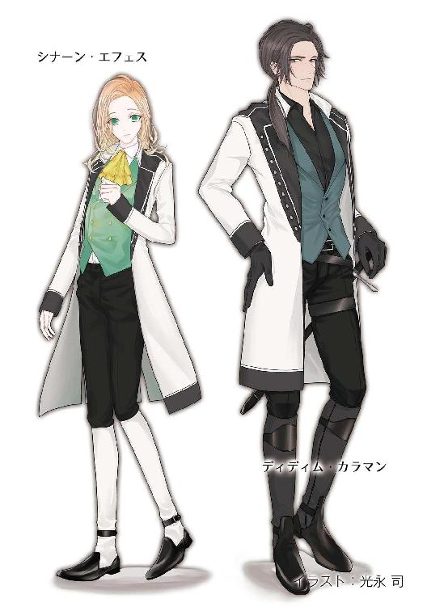

| 月哥伝 2巻 月KA伝シリーズ | |
| 御木 宏美 | |
| クリーク・アンド・リバー社 (2018) | |

月哥伝 ２巻
～月KA伝シリーズ２～
御木 宏美
本作品の全部または一部を無断で複製、転載、配信、送信したり、ホームページ上に転載したりすることを禁止します。また、本作品の内容を無断で改変、改ざん等を行うことも禁止します。
本作品購入時にご承諾いただいた規約により、有償・無償にかかわらず本作品を第三者に譲渡することはできません。
本作品を示すサムネイルなどのイメージ画像は、再ダウンロード時に予告なく変更される場合があります。
本作品は縦書きでレイアウトされています。
また、ご覧になるリーディングシステムにより、表示の差が認められることがあります。
月哥伝
三章
２
ファチャとシナーンと先に戻ったエル・マルが待つ主館の主の間へ、瑠奈たちが戻って来た。
「お帰りなさいませ」
ファチャが明るい声をあげて駆け寄る。
「ただいま」
ダカーンに抱かれた瑠奈は小柄な少女を見下ろし、にっこりと笑った。
「お化粧、落とされますでしょう？ お湯の用意ができておりますわ」
「そうね──ありがとう、ダカーン」
下ろしてもらった瑠奈はしっかりと立った。軽やかな足取りは健康そのもの。
ロドスが割れ顎を撫でながら感心した声で、
「あちらの化粧品はすごいですな。間近で見ても病人そのものだ」
ガラジェとリプシマ、シグリが苦笑を浮かべながら頷く。瑠奈は笑いながらくるりと振り返った。
「厚い石壁のせいで部屋がもともと薄暗かったし、肖像画に掲げた聖なる炎の灯りにも助けられたわ。太陽光の下じゃさすがに気づかれたわよ」
「聖下とシグリ殿の演技も、下手な役者より見ごたえのあるものでしたよ」
エル・マルが朗らかに言い添える。
「そんな、私など......」
シグリは恥ずかしそうにうつむく。
ロドスが太い腕を組み、ディディムに顔を向けた。
「まったく、女は魔物だな」
「ああ。女の涙だけは努々信じることなかれ」
「あら」瑠奈が声をあげた。「だまされる男がばかなのよ。ねえ？」
「そうですわ」
ファチャとガラジェ、それにリプシマまでが瑠奈に味方して頷く。男たちは顔を見合わせた。ロドスとディディムは肩をすくめる。
「それじゃ、だまされないうちに俺はこれで」
全員が声の主へと目を向けた。
エル・マルは片目を瞑った。
「早く戻ってやらないと。エスキルと二人だけにしないでくれって、誰かさん、鉄格子を握り締めて泣き叫んでいましたからね」
ふん、とダカーンが鼻を鳴らした。
「軟弱な奴だ」
ロドスとディディムが失笑を浮かべる。
「それは俺でも泣くぞ。あいつと二人きりなんて、命がいくつあっても足りんだろうが」
「逃げ場のない監獄の中でとなると地獄だな」
「だろ？ ──というわけで」
「エル・マル」
ドレスの裾をひるがえし瑠奈は駆け寄った。
監禁中の身の上の青年はほのかに笑った。
「久し振りに外の空気が吸えて嬉しかったですよ」
瑠奈は甘いマスクをじっと見つめた。
「......必ず出してあげるから」
エル・マルは跪き、瑠奈の手をとって甲に口付けた。
「オルターに伝えます」
瑠奈はドレスの胸元を握りしめた。
「それでは」
エル・マルはきびすを返し、部屋から退出した。牢までの護送役としてダカーンが同行する。
二人を見送り、残ったギルネ、ロドス、ディディムも瑠奈に一礼した。
「我々もこれで」
「待って」瑠奈は呼び止めた。「話があるの。化粧を落としてくるから、ここで待ってて」
３
ナヴァール側の間者はどこに潜んでいるかわからない。それはもしかしたら教育係の中に紛れ込んでいるかもしれなかった。アレグリナは元気だと報告されると困るので、講義は四日前から体調不良を理由に取りやめになっていた。
隣接する寝室で洗顔を済ませ、謁見用の蒼い礼服から普段着のドレスに着替えて、瑠奈は、ギルネ、ロドス、ディディムが待つ部屋に戻った。
三人は暖炉の近くや窓際に立っていた。
「お話とは？」
ギルネが問う。
「座って」
瑠奈は窓の近くにあるソファを勧め、自分も一人掛けの椅子に腰を下ろした。
三人と入れ替わりに瑠奈と一緒に寝室から出て来たリプシマが見張りのために廊下へ出て行く。寝室への扉は外側からガラジェによって閉められ、その場は瑠奈とその指導的役割のギルネ、それぞれが一大隊を率いる武将のロドスとディディムの四人だけとなった。
内密の話と悟って、ロドスが割れ顎を撫でながら言った。
「なにやら怖ろしいですな」
言葉に反して口調はのんびりとしている。瑠奈は軽く笑った。
「本当に少し話を聞きたいだけよ」
「そのしおらしさがかえって要注意ってね」
ディディムも頷く。
「失礼ね」そう言いながら、瑠奈はギルネに視線を向けた。「支配者は常に二手先、三手先を考えろって言ったわよね？」
「ええ......」
秀麗な補佐役は不信感をあらわに眉をひそめる。
「知りたいのは、バイロンが、いつ、具体的にどういう形で攻めてくるのかってこと」
ギルネ、ロドス、ディディムの三人は一瞬顔を見合わせた。
「軍事などお知りになってどうなされるおつもりです」
ギルネが容貌をそのまま映した冷たい声で訊ねる。
「あら、私の国よ。なにがどうなっているのか、把握しておくのは神王として当然のことでしょ？」
ギルネは眉間の溝を深めた。瑠奈は肘掛けに頬杖をついて平然とその顔を見返す。
ロドスとディディムが苦笑いをこぼした。
神王といってもアレグリナはまだ弱冠十七歳の少女。一方の三人は年少のギルネでも八つも上。しかもアレグリナは養育院育ち。当然、帝王学も貴婦人の作法も学んではいない。しかし、この少女はどんな相手に対しても、いついかなる場合でも、怖れを知らない。逆になんでも知りたがり、意のままに動こうとする。
聡いのか、あるいはよほど自分たちは信用されていないのか──。
「ギルネ」
そのあたりで退け、とディディムが苦笑を滲ませながら言外にたしなめた。放っておけば、二人はどこまでもやりあう。
不機嫌そうな反応を見せるギルネに、二人の武将は揃って首を縦に振ってみせる。
「別に隠すことはなかろう」
軽くため息を落としたギルネであったが、すぐに怜悧な顔つきに戻り、口を開いた。
「レイクトラとバイロンを繋ぐ街道は三本」
瑠奈は頬杖をやめ、上体をまっすぐに戻した。
「そのうち荷車を通せるのは一本だけです。あとの二本は、人馬は問題ないが荷車は進めません」
ロドスが続ける。
「つまり大型の武器や物資を運べる街道は一本だけということです。大砲や食い物がなければ戦はできない。よってバイロンは必ずその街道を進軍してくる」
言葉の間にギルネが立ち上がって、書棚から国土の地図を持ってきた。広げて瑠奈の前に置く。
すらりとした指が山岳地の中を蛇行して続く一本の線を示した。
「この道です」
レイクトラとバイロン、両国の間には頂上に万年雪を頂く険峻なランドック山脈が横たわる。おおむね東西に走る山脈の南側がレイクトラ、北にバイロン。
ギルネが示した街道はレイクトラの国土の西の端近くにあり、谷に沿って北上し、いくつかの峠を越えて、バイロンへと下っている。
「この記号はなに？」
瑠奈は街道の途中にある、育った異世界の地図では橋を表す記号とバツ印を組み合わせた形を指差した。同じものが山脈の北側にも一つある。
「国境です。税関がある両国の国境間は、大人の足で五日。その間の道のりは街道の中でもっとも厳しく、人家は一軒もありません。山岳地全体を抜けるには、天候に恵まれた場合で、最短十三日」
バイロン側からやって来て、国境を越え、レイクトラに入ると、街道はなだらかに下りながら、やがて盆地に出て、大きな湖に突きあたる。街道はそこで湖に沿って南北に分かれている。北に向かえば湖の端から渓谷に入り、月の谷へ。南に向かうと、道は再び上りになり、低い峠を越えたその先には、トスカナ有数の豊かな国土が広がる。街道はその農地の間を縫って聖都ロスタムへと続いている。
瑠奈は谷で傭兵の一軍を率いるロドスとディディムを見た。
「いつ来るの？」
「冬には行動を起こさないのが軍事原則です」ディディムが答えた。「そうでなくても山の冬は厳しい。大砲など重い荷駄は雪では運べないし、兵士も手足が凍傷になれば戦えない。進軍は山岳地の雪が完全に消える初夏。今より半年後でしょう」
「ナヴァールは十万って書いていたけど、どうなの？」
「兵の数はおそらくそれぐらいでしょう」今度はロドスが答える。「バイロンの平時の兵数はレイクトラと同じ、一師団千七百二十八で十二師団。おそらく三師団を国内に残し、派兵は九師団一万五千余。これに農民兵九万前後ってところですな」
「兵の数ってことは、ほかにもなにかあるの？」
「まあ、戦にはいろいろと......」
豪胆な男が珍しく無骨な顔に困惑を浮かべ、言葉を濁す。瑠奈は首を傾げた。
どうする、とロドスは横目でディディムとギルネに問いかけた。
秀麗な男は冷たい表情で軽いため息を一つついた。ディディムは苦笑いを浮かべる。
二人から明確な答えと援軍を得られなかったロドスは困窮しながら口を開いた。
「兵站っておわかりになりますか？」
「なに、それ？」
予想できた反応だが、ロドスは広く分厚い肩とため息を落とす。そして腹を決め、勢いよく顔を上げた。
「兵站ってのは、戦線に必要な人員や物資を供給する係や仕事のことです。しかし本国から大量の物資を運んでいたんでは、肝心の兵力を輜重兵に割かねばならんでしょう。そこで国境を越えての進軍の時は、必要な物資はおおむね現地で調達するんです」
美しく可憐な少女は細い眉をひそめた。
「それは行く先々の街や村で食料や武器を略奪するってこと？」
ロドスはがしがしと頭をかいた。
「......手っ取り早く言ってしまえば、そういうことです」
瑠奈はますます眉をひそめる。
どうやら過度に怯えさせまいとしたロドスの気遣いは無用だった。深窓の貴族のご令嬢なら兵隊と聞くだけで怯えて泣き出す者がいても不思議ではないが、アレグリナは眉をひそめるだけ。その胆の据わり具合にロドスは苦笑を浮かべる。
「というわけで、戦には略奪がつきものでしてね。ましてやバイロンの場合は飢饉からくる侵攻です。これはあくまで我々の予想ですが、兵力とは別に武器を持たない略奪隊がさらに十万」
十万、と瑠奈は呟いた。初めて表情がかげる。
「......それは絶対？」
「おそらく。春に蒔く種がなければ、農民を国に残しておいてもしかたがないでしょう」
「そうね......」
瑠奈は視線を落とした。
少女の声の調子が急に弱くなったので、ロドスは急いで言った。
「まあ、略奪隊がやって来るのは、本隊が通過してからです。本隊を食い止めればなにも起きないってことですがね」
ディディムも頷き、口を開く。
「さしあたっての問題は武装した本隊です」
瑠奈は顔を上げた。精悍な風貌に視線を向ける。
「農民兵は九万って言ったわね。それ以上集められる可能性はないの？」
「ないとみて差し支えありません」
ディディムは答える。
「どうして？」
「バイロンの民の半数は一年中移動をしている遊牧民と狩人です。定住していない民を徴兵することは不可能です。さらに閲兵地を山岳地の入口にしたとして、山岳地の往復だけでひと月。戦闘を合わせると、三ヵ月から四ヵ月。この間、兵の大多数は徒歩での移動で、夜は野営です。これは健康な男でもかなりきつい旅です。ましてやバイロンは二年続きの凶作で民は痩せている。この過酷な行軍に耐えられる男は十万前後とみていいでしょう。またそれ以上の数を集めても、支給する武器がない」
「そう」瑠奈は改めて国土の地図に目を落とした。「......ナヴァールはどう考えているのかしら」
ギルネが口を開いた。
「聖宮は全土から二十万を徴兵するように諸侯に命令を発しました」
「二十万......」
ギルネは頷く。
「聖宮は我らが春を待って挙兵すると読んでいます。これに対し、ナヴァール公側は聖都で迎え撃つ形をとり、半月から長くてもひと月で決戦。そのまま部隊を対バイロンに向かわせようという算段です」
「いうなれば」ロドスが続けた。「我らの蜂起を、バイロンとの戦に備えての実戦演習にしようというわけですな」
「徴兵はすでに始まっております」
「さよう。農民を集めてもすぐには使いものにならない。槍の扱いかたを習得させ、戦場での各種の号令を覚え込ませ、組織だった行動がとれるように仕込むには、最低三ヵ月はかかる」
「それで？」
「数では問題ありません。内戦は起きない。つまり二十万が丸々残る。これに衛兵隊二万と月の谷の傭兵三千。対バイロンの兵力としては充分です」
「戦場はこのカンナエ湖湖畔」ディディムが国境から山岳地を下ると突きあたる大きな湖を指差した。「ここは十九年前にも戦場になったところで、国境から下ってきた街道は湖に突きあたり右に折れる。国境から湖までの道のりは両側が森になっています。通常、いつどこから攻めてくるかわからない戦に対しては護るより攻めるほうが有利です。侵攻軍が兵力を一点に集中できるのに対し、迎え撃つ側は兵を広範囲に展開させねばならない。しかしこの場所なら、我が軍は湖を背に陣を張ることができ、進攻してくるバイロン軍に対して正面と両側面の三方から攻撃を仕かけられます。補給物資の輸送も、船を使えば迅速にかつ一度に大量に運べる」
ギルネが続けた。
「十九年前の戦のおりには、ローラン様の異母兄上のジュータ公が総司令官を務められましたが、実際の指揮は副司令官だったナヴァール公がおとりになりました。当時、ナヴァール公はまだ二十二歳でしたが、優れた戦術でバイロンの兵力の三分の一を殲滅。我が国を圧倒的勝利に導きました。この勝利で、公は戦上手と、トスカナ中に一躍その名を馳せられたのです」
ロドスとディディムが頷く。
瑠奈は地図を見つめた。
周囲を森と山に囲まれた盆地の底の湖──。
「だめよ」
「聖下？」
ギルネが訝しげに尋ねる。瑠奈は年上の三人の騎士たちの顔を順番に見回した。
「二十万もの農民を徴兵すれば、その年の収穫は激減してしまうわ。私は農業についてはなにもわからないけど、女や老人だけでできるものではないんでしょう？」
「それはそうですが......」
ロドスが言葉尻を濁す。
「一年持ちこたえる余裕はあります」
ギルネが答えた。瑠奈はその顔を見つめる。
「聖宮を堕ちたのによく知っているわね」
「今は隠遁していても、我らはこの谷から国中を見ております。宮廷は飢饉に備えて、各領地に半年分の穀物の備蓄をさせております。一年収穫が落ちても、餓死者が出る事態にはいたりません」
瑠奈は首を横に振った。
「それでも民の暮らしが苦しくなることに変わりはないわ」
三人は驚き目を見張る。
「聖下」
瑠奈は苦笑を浮かべた。
「誤解しないでね。慈悲の心で言ったんじゃないのよ。ただ......」
瑠奈は高価なサテンを何メートルも使って豪華に仕立てられた普段着に視線を落とした。衣裳部屋にはこんな普段着だけでも十着以上がかかっている。ほかに謁見用の蒼い礼服が五着。晩餐用の正装が十着。夜着やナイトジャケットまでが絹だ。
「ただ、私はドレスや宝石に囲まれた生活がしたくてこちらに戻って来た。民も同じだと思うの。貧しく苦しい生活より、豊かに楽しく暮らせるほうがいいでしょう？ 家族を失うのもいやよ」
「おっしゃるとおりですが......」ロドスが頭をかく。「では、どうしろと？」
瑠奈は国境と国境の間、いくつもの峠と結んで続くランドック山脈内の街道を指差した。
「ここで止めて。月の谷の兵三千だけで」
三人の騎士は呆気にとられた。
「谷の兵、三千だけで......？」
「そうよ」
「無理です」
ディディムが笑いながら即答した。
「どうして？ この街道をやって来ることはわかっているのよ？ 湖の近くは両側が森なんでしょう？ だったら兵を広範囲に展開される可能性もありうる。もしかしたら端っこのほうの部隊が迎撃網を潜り抜けて、峠を越え、平地にたどり着いてしまうかもしれないじゃないの。そこで略奪を働かれたら、どう対処するの？」
「............」
ほら、と瑠奈は厳しい目つきで三人を見つめる。
「絶対、バイロン軍を平地に下ろしてはいけないわ。どこか、街道がうんと狭くなっていて兵が逃げられないような場所を使って、国境の外で止めて」
ロドスとディディムが顔を見合わせ、そのまま二人揃って天井を見上げた。
ギルネが深いため息をついた。
「よろしいですか、この街道は塞ぐことができません」
「どうして？」
「十二宮があるからです」
ギルネはバイロンの国境を指差した。そのすぐそばにもう一つ、別の記号が描かれている。
「何人たりとも聖なる巡礼を妨げてはならない。これは月族の間で、今から千年以上も前に定められた大条約です。神王朝が変わろうとも、国名が変わろうとも、シャーを唯一の神と仰ぎ奉る我ら月族は、すべての国がこの条約を批准しております。もちろんレイクトラも例外ではございません」
十二宮はシャーを祀る聖地で、月族の土地に十二ある。
「各国は毎年、巡礼街道の整備と巡礼者の保護に多額の予算を拠出しております。つまりレイクトラとバイロンを結ぶこの街道は荷車を通せる唯一の生活街道であると同時に、聖なる巡礼の道なのです。巡礼の道はシャーを信仰する月族すべてのもの。一国の事情でどうにかしてはならない。この街道を塞ぐことができないからこそ、我が国は再三にわたってバイロンと干戈を交えているのです」
「それに」ディディムが言った。「バイロンにはムークという巨獣がいます」
「巨獣？」
「幌馬車ほどもある四つ足の獣です。バイロンよりさらに北、この大陸の果て、凍てついた極寒の大地に生息していて、全身が灰色の厚く長い毛で覆われ、鼻の左右に太く鋭い牙が突き出ています。バイロンはこれを二十数頭飼い慣らしていて、行軍の際には必ず、鉄の障壁を押すムークの群れを先頭に並べ、突進してくる」
ロドスも苦々しげに続ける。
「とにかくものすごい力の持ち主で、暴れ出すと手がつけられない。丸太の防護柵なんかあっという間に倒されてしまいます」
「遠距離から仕留められる武器はないの？ 大砲とか、麻酔銃とか」
「聖下のお育ちになられた世界でしたらあるいは。しかし、こちらにはあいにくと」
「鉄板で補強した障壁は大砲の弾では打ち破れないし、厚い毛皮は普通の矢は通しません。かろうじて威力があるのはロングボウとクロスボウだが、むしろ生半可に傷を負わすと痛みで暴れ出すので、かえって危険です」
「十九年前、ナヴァール公も十二頭のムークにてこずったそうです。過去の敗戦からバイロンは今度は倍の数を投入してくるでしょう」
「逃げ場のない山岳地の街道では、力で押されたら負け。畏れながら、わずか三千では一日も持ちこたえられません」
「でも......」瑠奈は視線を落とした。「......収穫をふいにしたくないわ」
視線が注がれる。
瑠奈は顔を上げた。
「命令よ。傭兵三千だけでなんとかして」
見つめていた三人は顔を見合わせ、それから全員が深いため息をついた。
「なによ、その反応は」美しい少女は冷ややかに睨みつける。「そこを考えてこそ、名将。戦上手と称えられたナヴァールですらできなかったことを成し遂げてこそ、十一使徒家でしょ。あなたたち、そんなのでよくナヴァールに勝つ気でいたわね」
「お言葉ですが」ロドスが苦々しげに口を開く。「物事には、できることと、どうあっても不可能なことがありましてね。畏れながら聖下のおっしゃっていることは明らかに後──」
瑠奈はぷいと顔を背けた。
「いや。可能性を探りもしないうちから、否の返事なんか、聞かない」
ロドス、ディディム、ギルネは再び目を見合わせた。どの顔にも困惑が浮かんでいる。
ギルネはこめかみに手をあてて深いため息を落とした。それぞれ一軍を任されているロドスとディディムは難しい顔つきで腕を組み、テーブルの上の地図を凝視する。
「うおおおおっ──」
突然、ロドスが獣のような低い唸りを発しながら、茶色い髪をがしがしとかきむしった。
「............」
唸りと手がぴたりと止まって、屈強な男はゆっくりとディディムに視線を向けた。
「オルターを参加させるか」
瑠奈ははっとした。
言われたディディムは腕を組んだまま視線だけを年長の親友に返した。
ロドスは割れ顎を撫でながら、
「十四年間、あちらで暮らしたあいつなら、なにか知恵が出てくるかもしれん」
「............」
答えずにディディムは視線をギルネに向けた。見られた男は怜悧な眼差しのままディディムを見返す。そこりロドスが加わり、三人は目だけで語り合う。
狂おしいようなざわめきが、一人、蚊帳の外にいる瑠奈の胸を襲った。
「............」
少女は無意識のうちにドレスの胸元を強く握り締めた。
４
オルターとエル・マルは顔を向けた。
石段を上ってくる者がいる。靴音は二人分。
足音は最上段まであと十段近く、ちょうどカンテラの灯りが見えるあたりで一度止まった。そこから再び上り始める。
やって来た人物を見た二人は、アレグリナの時ほどではないにしろ、驚いた。
看守部屋のテーブルで愛用のナイフを研いでいたエスキルが立ち上がった。
「エスキル」
物音に首を巡らせたエル・マルが、よせ、と若者をいさめる。他人の目には女のように見える若者は腰に下げた剣の柄に左手をかけていた。
上がってきたラハン・クルとウォレス・レザックは苦笑を浮かべた。
「おまえもアレグリナ様の間者か？」
エスキルは訝しそうに首を少し傾げた。今日は朝からここで看守についていた彼は、聖宮からの使者デリ・ブルーリを迎えての会見の場での母フランツェと当主たちのやりとりを知らない。
「なんでもない」言って、レザックは静かに続けた。「大丈夫だ。二人を始末しに来たのではない」
クルも鉄格子の中に拘束されている青年たちを見据えながら、首を縦に振る。
「おまえたちを始末し、アレグリナ様を監禁して、当初の予定どおり兵を挙げるは容易いが、それではあとあと諍いを抱えることになる。聖宮を取り戻しても、神王聖下の信用を失ってはなんにもならん」
「女の恨みは静かだが、いつまでも燠火となって燃え続けるからな」
「のちのことを考えれば、今回はアレグリナ様のお気の召すようにことを運んだほうが得策だ。それにナヴァール公を我ら十一使徒家だけで討てば、腹をすかせた同盟者らに蜜を分け与える必要はなく、人事の混乱は最小限で済む」
エル・マルとオルターは苦笑を浮かべた。
「やけにあっさりと受け入れたなと思っていましたが、そういうことでしたか」
クルは鉄格子のほうを見ながら、エスキルが座っていた場所とテーブルを挟んで向かいの椅子にどっかりと腰を下ろした。
「国を治める者は二重、三重に物事を考えねばならん。アレグリナ様はそのお齢にしたらご聡明なかただが、まだ一本気であられるな。為政者はもっと腹黒いものだ」
レザックが後ろで頷く。
エル・マルとオルターは目を見合わた。どちらからともなく口元に失笑が浮かぶ。
オルターが英語で独りごちた。
「さすがのお嬢ちゃんもまだ青いってことか。老狸どものほうが一枚上手だったな」
エスキルが横目に二人を見やった。繊細な外見とは対照的な鋭い双眸が、目の前のクルの頭を一瞬とらえて、どうする、と問う。エル・マルは首を横に振ってみせた。
エスキルは剣から手を離し、壁際へ下がった。
「聖宮からの使者殿は？」
エル・マルが父に訊ねた。
「カディの屋敷で休息をとらせている。主館では人に見られる可能性があるゆえな」
「そうですね」
クルは椅子から立ち上がり、息子の前に歩み寄った。
頑丈な鉄格子をはさんで、父子は向かい合った。
「......今夜、発つ」
「そうですか......」
エル・マルは硬い声で答えた。
聖宮で、あるいは道中で、殺されるかもしれない。
危険は覚悟のうえ。
クルは右手の薬指にはめた銀の指輪を外し、鉄格子の間から息子に差し出した。
「私が死んだら、おまえが当主だ」
「父上......」
指輪にはクル家の紋章が刻まれている。
交渉に赴く代表は三名。そのうちの一人に、ラハン・クルは自ら名乗り出た。
子の罪は親の罪。
父はそれを口にしなかったが、親心は鉄格子の中の息子にも伝わった。
渡された指輪を握り締め、エル・マルは後悔の念を噛み締める。そんな息子を、父は、今はただ静かに見つめる。
ウォレス・レザックがオルターに無言で合図を送った。オルターは黙ったまま頷き、クル親子から少し距離を置いた。
もう一組の父子も隅のほうでやはり鉄格子をはさんで向かい合った。しかしこちらは間近で顔を合わせても、互いにかける言葉が思い浮かばなかった。
十六年前の凶事の前も、ともに暮らしたことすらほとんどない。気に留めないことはなかったが、気難しい妻との軋轢が煩わしくて、領地を訪れても別邸への足は遠のいた。
目の前に立っている青年は我が子でありながら見知らぬ男だった。
ウォレス・レザックはいつのまにか自分より背が高くなっている息子を見つめ、口を開いた。
「ダンとメアリーと申す者たちに礼を言わねばならんな」
自分が放りっぱなしにした息子を一人前の男に育ててくれた。
「......恨んでいるか？」
オルターは静かに微笑い、首を横に振った。
「俺は幸せに生きてきました。だから俺のことは気にしてもらわなくてけっこうです。ただ......」
「ただ？」
「......いえ」
あの少女は──。
亜麻色の髪と花のように美しいその姿が脳裏をよぎる。
「......アレグリナ様がここにお見えになったそうだな」
口に出さなかったのに、父のほうがその名を口にした。
「それはガラジェから？」
「そうだ」
オルターは微苦笑をこぼした。
「かわいそうに。けっこうなついていやがるのに」
本来は信頼するべき身近な存在ですら監視者だ。
レザックは厳かに答えた。
「我々とてアレグリナ様のお幸せは願っている。ご要望にも可能な限りお応えするつもりだ。ただあのかたは神王位を継ぐ唯一の御方であらせられる。ただの貴族の娘であるファチャなどとは違うのだ。その御身は個人のものであり、同時に国家のものだ。サナイ神王朝が長期に渡り安寧にあり続けることは、天下泰平の国家が続くということ。つまりはそれが民を護るということだ」
「そうですね......」
オルターは視線を落とした。
エル・マルが言ったとおり、十七歳の少女に自由はもうない。向こうの世界に留まっていたら、これからが人生でもっとも楽しい時間だったろうに。仕事をして、夜遅くまで遊び歩いて、恋をして。自由に自分を表現しても誰にも咎められない。
それらの光景がふと脳裏の端に浮かんで、オルターは心の中で苦笑をこぼした。
想像をしてなんになる──。
そう思いながらも次々と映像が浮かんでくる。
眩しい陽射しが降り注ぐロスのロングビーチで、行き交う男たちの視線を釘づけにしてビーチチェアに寝そべる水着の美女。ソルトレイクシティのムードのあるバーで、テーブルに頬杖をついて、カクテル越しに艶やかに見つめる明翠色の瞳。あるいは赤い夕日が沈むグランドティートンの大地で、風に吹かれながら雄大な自然を眺め──。
連れて行ってやりたかった──。
無念よりも思慕が勝る。あと数年もしたら、彼女は眩しいほどいい女になっただろうに。
けんかをして、ふざけあって──キスをして。
二人で過ごしたあの夜のように。
細い肉体の感触はまだ抱きしめた腕に残っていた。鼻孔をくすぐった甘い花の香り。温かな体温。
できることなら、今一度──。
甘く熱い感情が身体の中心からこみ上げる。
オルターはぐっと両手を握り締めた。
その耳に父の声が届いた。
「ことがなし、自由の身となった暁には、国を出て行け」
オルターは目を上げた。レザックは表情の端に苦いものを滲ませながらまっすぐ見つめている。
「フランツェの言葉だが、異常な状況下で時間をともにした男女は恋に落ちやすいそうだ」
「............」
「おまえがアレグリナ様をガザラから連れ出し、聖宮から派遣された部隊が待機する街に着くまでの間、追われていると思い込まれていたアレグリナ様にとって、頼れるのはおまえだけだった。ましてやおまえはアレグリナ様と同じく、あちらの世界での暮らしが長い。迎えにいった者の誰より話が合うだろう。アレグリナ様がもし......」
その先は言わなかった。
視線を感じてオルターはエル・マルとクルのほうに目を向けた。二人が見つめている。
クルが口を開き、レザック同様に厳格な声で言った。
「アレグリナ様には聖宮に入られたらすぐにでも次代神王をお産みいただかねばならぬ」
レザックがオルターのほうに一歩歩み寄った。
「おまえを聖夫にするわけにはいかぬ。釈放されたらただちに国を出て、二度とアレグリナ様の前に現われるな」
オルターは視線を落とし、ひっそりと笑った。
「......わかっています」そして顔をあげ、「ご心配なく」
肩をすくめる。
「あいつのほうがどうあれ、年下は俺の好みじゃないし、だいいち俺には向こうに恋人がいる。出してもらえたらすぐにでもあちらに戻りますよ」
レザックはひたと息子を見据えた。
「......約束できるか？」
「はい」
オルターは即答した。
視線が絡まり合う。
「......そうか」
レザックとクルは安堵したように肩の力を抜いた。
いまだオルターを見つめているエル・マルの顔に憂いが浮かんだ。気づいたオルターは微苦笑を浮かべた。
四章
１
風のない暖かな日の午後。
昼食を終えた瑠奈はファチャと走ったあの石塁の上をシナーンと散歩していた。
一周五百メートル強の石塁は上空から見下ろすとブーメランのように途中で折れた細長い形をしている。歩廊の幅は戦闘の際、弓や鉄砲を放つ兵の後ろを補給の兵が行き来できるように、大人の男二人が並んだよりやや広く、端には矢狭間がついた胸壁が設けられていて、格好の散歩道だった。
視えないシナーンと手を繋ぎ、彼の歩みに合わせてゆっくりと歩きながら、瑠奈は周囲の景色を望んだ。
「本当にシナーンが見せてくれたとおりね」
頂上に万年雪を頂く険峻な峰々に護られた深い谷。一番深いところには空の色を映して青く輝く三日月湖がひっそりとたたずんでいる。その周囲に点在する城。小さな村。草原。広葉樹と針葉樹の森。
「とてもすてきなところだわ」
「山の上のほうに行けばもっとすてきなところがありますよ。お花畑や、その途中には大きな滝、氷の河」
「行ったことある？」
「ええ。子供のころには毎年夏になると、ティアやファチャたちとよく。視えなくなってからも何度か。ディディムやエル・マルが連れて行ってくれました」
「そう......」
瑠奈は谷の上流、はるかかなたにそびえる灰色の険しい峰々に目を向けた。
向こう側はバイロン──。
視えてはいないのにシナーンが振り向いて、山脈を見つめている瑠奈の顔に視線を合わせ、静かに言った。
「そろそろロドスたちが国境に着くころです」
そうね、と瑠奈は山を見つめたまま答えた。
ロドス、ディディム、ダカーン、エスキルの四人は今、オルターとエル・マルを連れて、バイロンとの国境にまたがる山岳地に、侵攻を食い止める作戦を立てるための視察に出かけている。瑠奈も一緒に行きたいと言ったが、答えはもちろん否だった。
瑠奈はため息をつきながらシナーンに目を向けた。
「なんでいつも私の考えていることがわかるの？」
少年は軽く笑った。
「ずっと一緒でしたから」
瑠奈は首を傾げた。
「ずっと？」
「ええ。アレグリナ様がお生まれになられる前からずっと......」
視えない目を軽く伏せ、シナーンは淡く笑みを浮かべた。
「父母が聖宮に部屋を賜っていたので、僕は母が出産で宮廷を辞していた数ヵ月を除き、お腹の中にいたころからあの凶事までのほとんどを聖宮で暮らしたそうです。リレ様にもたいそう可愛がっていただいたと聞いております。アレグリナ様がお生まれになってからは、まるで兄妹のように」言葉を切り、シナーンは瑠奈と同じ色の瞳を正確に瑠奈のほうに向けた。「母が申すには、僕たち、よく一緒に昼寝をしていたそうですよ」
「憶えてないわ」
呆然と首を横に振る瑠奈にシナーンは朗らかに笑った。
「僕もなにも記憶にありません」
「そうよね。赤ん坊だったのですもの」
「ええ」
そう、と呟き、瑠奈は自由な手も繋いでいるシナーンの腕に絡ませて、温かいそれに身を寄せた。
「お母様とシグリ、本当に仲がよかったのね」
「従姉妹でもありましたからね」
「そうなの？」
「母の母はリレ様のお父上ローラン様の異母姉でした。十四代グスト聖下には六十四人の御子がいらっしゃったそうですから」
瑠奈は上目遣いに空へ目をやった。
「......よく作ったわね」
「系譜に載っているかただけでその数ですから、死産や流産だったかたも合わせると、その倍近くはおできになっていらっしゃるでしょうね」
「ナヴァールも三十何人作って、いまだ次代神王はできずでしょう。本当にシャーバンって生まれにくいのね」
「神王家はそれでも民に比べたら桁外れの確率ですが」
「そうね。初代から私まで十七代も途切れなく生まれてきたんですもの」
「ええ」
「じゃあ──私とシナーンはまた従兄妹になるのね」
「......そうですね」
シナーンは奇妙な低い声で答えた。
その腕をつかんでいる瑠奈の指に一瞬力がこもった。
「......ほかの十一使徒家には神王家の王子や王女と結婚した人はいないの？」
「いない家はないです。歴代の神王聖下がたくさんの御子をお作りになられたので、十一使徒家にかぎらずほとんどの上級貴族の家柄で、一度は神王家と縁戚となっています」
「じゃあ......」
瑠奈は胸元に手をやった。シナーンが足を止める。
「アレグリナ様？」
瑠奈は首を横に振り、軽く下唇を噛んで目を伏せた。
ファチャの声が聞こえた。
「アレグリナ様！」
声がしたほうに瑠奈は顔を向けた。くだんの少女が主館のほうからドレスのスカートをつかんで石畳の歩廊の上を駆けて来る。後ろにシグリの姿もあった。
「ギルネ様と歴史の先生がお待ちです」やって来たファチャはそう言い、首をすくめ続けた。「また勝手に出歩いていらっしゃるのかって、ギルネ様お怒りですわ」
瑠奈はぷいっと顔を背向けた。
「焦らして待たせて怒らせとけばいいわ」
「アレグリナ様ぁっ」
ファチャは恐ろしい話を聞いたように泣き声をあげる。シナーンが苦笑を浮かべた。
怒っているのは瑠奈のほうだ。
「アレグリナ様」聞こえたのか、あとからやって来たシグリが控え目にたしなめた。「畏れながら、定められたお時間とご予定を厳格にお守りなさることこそ、神王聖下の義務であらせられますわ。リレ様は廷臣の前では勝手なお振る舞いは決してなさいませんでした」
瑠奈は冷たい声で嫌味を放った。
「ただ一つを除いてはね」
シグリは頬を染め口ごもった。
「それは......」
「ファチャ」瑠奈は声をかけた。「シナーンを連れて先に戻って。ギルネにはすぐに戻るから、部屋で待つようにと」
「は、はい」
「アレグリナ様......」
シナーンとファチャを見送ったあと、気遣わしげに瞳を揺らして自分を見つめるシグリに、瑠奈はひっそりと苦笑をこぼした。
「信じてもらえないだろうけど、これでも私、向こうでは周りの大人に逆らったことなんて一度もなかったのよ」
勉強はよくできるし、素行も問題ない。児童養護施設の職員には、瑠奈は手のかからない子と評価は上々だった。
「なぜ......」
瑠奈は胸壁に手を置いた。そして遠くの山並みを見つめ、冷めた声で答えた。
「そこで暮らすしかない以上、反抗しても意味がなかったから。いい子のふりをしていれば、余分な干渉はされないし、必要以上の関わりを持たなくてすむ」
親身に接してくれた職員の人柄には感謝している。日本にそういう施設がなかったら、瑠奈はもっと悲惨な境遇の中で暮らしていただろう。けれど、心の奥底では彼らを蔑視していた。
愛情を持って子供たちに接し、温かい家庭の雰囲気を作り、道徳と秩序と努力の大切さを説いたけど、彼らは裕福になる方法は教えてくれなかった。教えられないのは当然だろう。彼らもまた富裕層ではなかったのだから。
それでもなにもわからなかった子供のころはまだ職員に甘えていた。けれど、小学校の高学年、中学生と成長して、少しずつ施設の外の社会を知るにつれ、どんどん懐疑心を抱くようになった。外には綺麗なもの、豊かでお洒落な暮らしがいっぱいあって、生まれながらにそういう暮らしを送れる人たちがいる。
瑠奈が育った京都郊外は嵐山や嵯峨野を抱える観光地であると同時に、市内でも有数の高級住宅街でもあって、芸能人や政財界の大物の別荘がたくさんあった。そういう環境で育ったから、ことさら貧富の差を肌で感じたのだった。
幸いにも瑠奈は綺麗に生まれついたけど、暮らしている場所は雑然としていてお世辞にも洒落ているとは言えなかったし、職員も洗練されたセンスの持ち主とは決して言えなかった。しかし世の中には、幼いころから建築家とインテリアデザイナーの手による洒落た家で、エステと流行のヘアサロンに通う母親から美の指導を受け、趣味のいいものだけに囲まれて暮らせる女の子がいるのだ。
たいがいの女の子が親に対してそうであるように、お洒落に目覚める思春期のあたりから、瑠奈は職員を尊敬できなくなった。施設のほかの子供たちに対しても同様だった。
私は絶対勝ち組になってやる。瑠奈が望んだのは権力や地位ではなく、ハリウッドスターのように優雅で洗練されたセレブの暮らしだ。
施設にいたら衣食住には困らない。だから十八まではそこで我慢するが、出たら二度と関わりを持たないと決めていた。
「でしたら、どうしてこちらでは......」
細い声に瑠奈は雄大な谷の景色を望みながら冷然と答えた。
「黙っていたら命すら失いかねないからよ。十一使徒家は自分たちに都合のいいように私を使おうとする」
シグリは視線を落とした。
瑠奈はその人を見つめた。
二十歳で瑠奈を産んだリレと同い齢。その瑠奈が十七になったが、見た感じはまるで少女のよう。シナーンと同じ明るい金髪の髪に、可愛らしい雰囲気のピンク色のドレスがよく似合う。背は瑠奈より低く、可憐で、母親の友人というよりは姉に近い。
「......お母様と仲がよかったあなただけは、本当は知っているんでしょ。私の父が誰か」
シグリははっと顔を上げた。
「い、いえ」
瑠奈はくすりと笑った。
「嘘が下手ね」
シグリは焦りもあらわに視線を外した。
瑠奈は微苦笑を浮かべた。
「いいの。その人物がどこの誰か知りたいわけじゃないから」
「アレグリナ様......」
「ただ......」瑠奈は胸壁の上に置いた手を握り締めた。「お母様も傀儡だった。未来は自分でなに一つ決められず......」
「............」
「......お母様はどんな気持ちでいたのかしら......。どうして家臣に秘密で私を身ごもったの？ その人を好きだったの？ それとも......」
シグリは顔を歪めた。
「アレグリナ様......」
瑠奈はその顔を見つめて答えを待った。
シグリは細い声を絞り出した。
「......リレ様は......」
けれど、そのあとが続かなかった。
涙が溢れ出る。シグリは口元を覆って顔を背けた。
瑠奈は震えている細い肩にそっと手を置いた。
「ごめんなさい、シグリ......」
シグリは横を向いたまま首を左右に振った。そして誰もいない空間を見つめながら湿った声で独り言のように詫びた。
「...申し訳ございません...リレ様......」
なぜ、なにを詫びたのか。今はもう亡きその人に。
この山上城砦に連れてこられた直後、目覚めるといつも彼女の姿がそばにあったことを瑠奈は思い出した。誰よりも長時間付き添ってくれていた。自身が倒れるほど献身的に。
母がもっとも親しい感情を抱いていた友。
同じく大人たちの傀儡だったリレ。
やるせなさを抱えながら、瑠奈はオルターが向かっている方向に目を向けた。
２
山岳地の視察に向かった一行は、国境へと続くだらだらとした上り坂を馬で進んでいた。
道の左右にはところどころに広葉樹が交じる針葉樹の深い森がずっと続いている。
このあたりの街道はよく整備されていて、幅は荷馬車が楽にすれ違える。馬なら六、七頭が横一列に並んで歩けた。
ときおり国境へ越冬に備えての大きな荷を運んでいる遅い隊商を追い越したり、荷を下ろして戻って来る一団や、バイロンの十二宮から下って来た巡礼者とすれ違ったが、行き交う者の姿は少なかった。あとひと月もすれば、このあたり一帯は深い雪に閉ざされる。冬に国境を越える旅人は皆無に等しい。
今も前後に人影はない。ロドス、ディディム、ダカーン、エスキル、エル・マル、オルターの六人だけ。機密保持のために兵も連れてきてないので、人前では口にできない話も支障ない。
「わずか三千で十万の大軍を相手にしろとはな」
ロドスの口調は朗らかで心なしか楽しげだった。ディディムの口元にも微苦笑が浮かんでいる。
「軍事についてはなにもご存じないかたならではのご命令だな」
「まったくだ。そんな考え、ナヴァール公でも浮かばんぞ」
一軍を率いる二人は驚きを通り越してもう感心するしかない。
「お嬢ちゃんらしい」先頭を行くオルターが言った。「聖宮でも孤立無援の状況でナヴァールに向かってけんか吹っかけやがった。豪胆と言おうか、無鉄砲と言おうか」
思い出して失笑を浮かべる。
「でも、悪いかたではない」
エル・マルが言った。
「ああ」ロドスが頷く。「たしかに戦略としちゃ悪くない」
「民を思う慈悲深きおかただ」とダカーン。
隣を進むオルターは肩をすくめた。
「そりゃどうかな。あいつが気にしてるのは民の命じゃなく、己の懐に入る税収だろ」
「世俗の垢にまみれきった汚らわしきおまえになにがわかる」
「いや、おまえこそあのお嬢ちゃんにだまされてる。幼くても女は怖いもんだぜ？」
「黙れ。聖下がどのようなかたであろうと、命をかけてお仕え申すのみ」
ダカーンは重々しく答える。オルターはせせら笑った。
「ま、聖典しか知らねえ坊主に女の神秘を説いても無駄か」
ダカーンは尊大にふんと鼻を鳴らした。
「騎士ではない虫けらの言葉なんぞ蚊の屁のようなものだ。なにを言われても意に介さん」
オルターがすかさずやり返す。
「お嬢ちゃんとおまえじゃ、美女と野獣だ」
「なんだと！」
「やるってのか。いいぜ、相手になってやるよ。いつでもかかってこい」
大声に驚いた馬たちが全身の筋肉を硬直させ、首を後ろにそらせた。オルターとダカーンは手綱を強く引く。今にも走り出しそうな乗騎を力で押さえつけ、馬上の二人はさらに怒声を飛ばし合う。
あおりを食ったのはほかの者たちだった。
「どうどうっ」
「いい子だっ、落ちつけっ」
怯えて跳ねる馬たちの首を叩いてなだめる。
「いいかげんにしないかっ」
「......殺す」
「............」
ディディムの一喝に続き、エスキルの氷のような一言で騒ぎはぴたりと収まった。
ロドスとエル・マルは顔を見合わせた。女のような若者は言葉だけでなく本当に切れ味鋭いナイフを抜いている。
「......相変わらず危ない奴だ......。おい、エスキル、先に行け」ロドスは馬を横にどけた。「おまえが後ろにいると命がいくつあっても足りん」
同感、と言ってエル・マルも道を開ける。
ディディムとオルターとダカーンも馬を後退させた。できた道をエスキルは単騎、悠々と進む。
騒動で止まっていた一行は、今度は先頭がエスキル、二番手にダカーンとオルター、最後尾にロドス、ディディム、エル・マルという三角形になり、再び乗騎を進めた。
「そのアレグリナ様のことだが」常足で馬を歩かせながらディディムが口火を切った。「ナヴァール公の例の件のことで、リプシマがことをなしたあとを心配している。お心に深い傷を抱えなければよいが、と」
「たしかに」ロドスが頑健な顎の下を撫でながら鷹揚に言った。「そのお齢にしたらご聡明で強いおかたではあるがな。十二宮での一件の時も、目の前で斬り合いが始まっても取り乱されなかった」
「お気が強くてもこればかりは別だ。訓練を重ねた兵でも初陣後には半数以上が悪夢にうなされる。実際」月の谷一の剣豪は精悍な顔に自嘲を浮かべた。「俺も初めて人を殺めた時は恐ろしかった」
「ああ、そうだな......」
ロドスが低い声で同意した。エル・マルとダカーンも視線を落とす。
「そうか？」
先頭から抑揚のない冷えた声が返った。ディディム、ロドス、エル・マルは苦笑を浮かべ、声を揃える。
「おまえは規格外だ」
エスキルはひょいと肩をすくめ、歩みが落ちていた馬の腹に拍車を入れる。
「とにかく」ディディムは硬い表情で続けた。「アレグリナ様は撃てると申されたが、いざその時になったら、どうなるかわからんと考えておいたほうがいい」
ロドスが頷く。
「具体的な話はセヴン卿、クル卿、マン卿が戻ってからだな。式の段取りを聞いてからもう一度話し合おう。今度はアレグリナ様抜きでな」
「ああ」
エル・マルが空に向かってため息をつきながら呟いた。
「できることなら引き鉄を引かせたくはないな......」
ディディムもロドスもダカーンも思いは同じだった。
オルターが苦笑いを浮かべた。
「まったく手のかかるお嬢ちゃんだ」
ダカーンが横目に睨んだ。
「貴様がそれを言うか」
「あ？ 俺がなんかしたか？」
「............」
ダカーンは不機嫌な面で黙り込んだ。
「あ？」
オルターは強面の顔を斜め下からのぞき込んだ。
「なんでもない！」
ダカーンは顔をそらした。気のせいか陽に灼けた肌に赤みが増している。
「ああ？」
オルターは不審げに眉根に溝を刻む。後ろをやって来るエル・マルがくすりと笑った。
「やめとけ。それ以上追求すると噴火するぞ」
ロドスとディディムも苦笑を浮かべながら首を縦に振る。
「おいおい、わかってねえのは俺だけか？」
親指を立てて自分を指したオルターに、ダカーンが重低音で呟いた。
「鈍い奴だ」
「ああ!?」
「やめろって」
エル・マルが苦笑混じりに再び制する。そして人がいないか素早く前後をたしかめ、渋面をありありと浮かべているオルターに説明してやった。
「レザック卿がおまえに言った件だよ」
「ちょっと待て。だからそれはあの時も言ったように、俺は──」
「そうじゃなくて」
エル・マルは苦笑を深めた。
「聖宮にいる同盟者からの報告で、アレグリナ様は、その......」肩をすくめる。「生娘ではないとな」
「......ああ」
そういうことか、とオルターは急に気の抜けた声を返した。そこにエスキルを除く四つの視線が集中する。
「あ......？」オルターは眉間の溝を深めた。「もしかして、俺が疑われてるのか？」
疑問を肯定する無言の疑わしげな眼差し。
「おいおいおい、ちょっと待てよ！」赤い髪の男は大声をあげた。「それについちゃ俺は完璧に無実だ！ だいいち相手はまだ十七だぜ!? ハイスクールの生徒に手を出したら犯罪だろうが！」
「ここはアメリカではない」
「色恋に年齢は関係ないな」
「しかもすこぶる美少女だ」
「誰も見ていない。そんな状況で、ふた晩も二人きりで、我慢できるか？」
四者揃っての否定に加えてエスキルまでが振り向いて懐疑的な眼差しを寄越す。オルターは頭を抱えた。
「勘弁しろよ。本っ当に、手は出してねえって。向こうがどんなところか、おまえらも知ってるだろうが。あいつは向こうで育ってんだからよ。十七で処女じゃなくてもフツーだろ」
「そうだ」豪放な性格のロドスが珍しく硬い口調で答えた。「普通の娘ならなにをしようともかまわん。しかしあのかたは神王聖下となられるお立場にあられる」
オルターは首を傾げる。
「つまりな──」
この中で最年長の男は後頭部をかきながら、こちらとはまったく社会制度が異なる、自由と平等という民主主義の世界での暮らしが長い弟分にはどう説明すればわかるだろうかと考えた。
「つまり、この国でもっとも尊く、もっとも注目を浴びる御方であられる。神王は人であって、人ではない。神の化身だ。実際には、シャーと神王聖下を同列視している民はおらんだろう。おったとしてもごく少数だ。しかし神王聖下を特別な存在とすることで、これまで支配が成り立ってきた。民に崇めよと命じているその御方が、いかがわしい人間では示しがつかんだろう」
エル・マルが続けた。
「だからリレ様が身ごもられた経緯は、いまだに公けにされていない。民には、アレグリナ様はリレ様と聖夫ナヴァール公の御子だ」
「法と信仰、民を絶対的に支配できる両者の象徴が、結婚前に別の男と寝て私生児を孕んだって民衆にばれると都合が悪いってわけか」
忠義心が厚いダカーンもこれにはなにも言わなかった。
そういえば向こうにも同じような女がいたな、とオルターは心の中で独りごちた。向こうの世界の聖職者たちは、後年、自然の摂理から外れた処女受胎という理由をひねり出し、彼女を聖人に仕立てた。
「人前では取り澄ました面をしていても、男女を問わず、卑猥な話は嫌いではなかろう」言って官能小説を愛読する男は隣に目を向ける。「なあ、ディディムよ」
精悍な風貌の男は顔をそらして咳払いをした。
オルターとエル・マルがにやりと笑った。ロドスは鐘が鳴り響くように声をあげて笑う。
先頭を行くエスキルが肩越しに振り向いた。ディディムはその女のような顔を忌々しげに睨みつける。
「おまえもくだらない話をリプシマやフランツェ殿の耳に入れるんじゃないぞ」
エスキルは肩をすくめて顔を前に戻した。
ロドスが面白そうに口元を緩めながら、
「人間ってな、けっこう性悪な生き物だ。一人の女にいったん淫靡な噂が出れば、それが神王だろうと、町娘だろうと大差ない。表立っては、低俗な話はそれをするほうの品性を疑えと人は眉をひそめて憤慨するが、話は尾ひれをつけて広がる。ましてやアレグリナ様はあのご気性だ」
オルターはシニカルに笑った。
「神王は恋も許されねえのか」
「宮廷規定と法に感情は入っていない。とはいえ、神王も人だ。どれだけ縛りつけても人の心までは支配できない」
ロドスの言葉を受けてエル・マルが詩の一説を唱えた。
「恋はするものではなく、落ちるもの」
ロドスは頷く。
「それは仕方がない。ただリレ様のように御子を作られるのは困る」
オルターが振り返った。
「お嬢ちゃんの父親については？」
エル・マルが首を横に振った。
「本当にわからないそうだ。聖郎の座を狙っている男は大勢いたが、リレ様がお心を傾けておられた男はいない、と当時、女官たちが証言した。いくら秘めてもそういうものは自然に滲み出るものだろう。ましてや女は男以上に敏感だ。しかし大勢いた女官の一人として気づかなかったし、そもそも神王聖下が一人になられること自体がない。一人でいるのはベッドの中だけだ。寝室に行くには女官の控え室を通らなければならない。控え室には毎晩複数の女官が待機していた」
「つったってなあ。人間のすることに万全はねえだろ。五分や十分なら女官の目をくらませて一人になれただろうし、十分もあれば茂みの陰で一発やれ──」
ダカーンの鉄拳が鳩尾にめりこんだ。
「下劣な話をするな」
オルターは腹を抱えて激しく咳き込んだ。エル・マルとディディムが、ばかが、と呆れた眼差しを送る。
ロドスだけが豪快に笑いながら、
「我ら十一使徒家の意のままになる男なら、それも大いにけっこう。見事、次代神王をその腹にお宿しできれば逆に褒美がもらえる。されど、エル・マルが言ったとおり、恋とは落ちるもの。親父殿たちがいくら設定をしても、アレグリナ様がその男をお気に召すとは限らん。逆に反勢力の男なんぞと関係を持たれでもしたら」
「幸いというか、不幸というか、リレ様という苦い前例がある」
エル・マルの言葉にロドスは頷く。
「深窓の姫君であらせられたリレ様ですら女官の目を盗んでご懐妊だぞ。自由な世界でお育ちになり、すでにご経験済みのアレグリナ様にいたっては......」
「こう言ってはなんだが、いたって気の強いおかただしな」
「俺たちはアレグリナ様がお育ちになられた向こうの世界を、おまえを、少しは知っている。しかし親父殿たちは知らない。知らないが、あちらでは人はみな法のもとに平等で、才能があれば家柄に関係なく出世でき、物質的にもこちらよりはるかに進んだ世界であることはわかっている。そこで長く暮らしたおまえと、気が強いアレグリナ様が手を取り合えば......」
「父上たちが危惧する内容もわかるだろ？」
後ろと横からエスキルを除く四つの視線がオルターに注がれる。
彼らが言わんとしていることを察し、オルターは自嘲を浮かべた。
「......そういうことか」
ロドスが苦々しげに吐き出した。
「すまんな、面白くない話で」
いや、とオルターは首を横に振った。そして彼はふわりとロドスに視線を向けた。
「親父たちになにか言われたのか？ 俺の気持ちをたしかめてこい、とか」
「ああ」
ロドスは素直に認めた。
オルターは微苦笑をこぼした。
「安心しろって親父たちに伝えてくれ。釈放されたら、俺はただちにこの国を出ていく。そして二度と戻らない。シャーとワカン・タンカに誓う」
３
国境は山間の少し開けた谷間に設けられていた。城壁に囲まれた街で、周りには畑や牧草地が広がっている。その外側には針葉樹に覆われた山肌がせまり、さらにその奥には草さえ生えない灰色の険峻な高峰がいくつもそびえ立つ。
加工していない荒石を芯にして、表面を切り出した石と煉瓦で固めた頑丈な城壁はバイロンの侵攻を防ぐために築かれたのではなく、盗賊の被害から街を護るためのものだった。
街に入る人間は、六ヵ所ある門のいずれかをくぐる。疲れきってたどり着く旅人のために門は真夜中でも開いていて、どの門にも常時一小隊の衛兵がつめている。
門には大小があり、大きいのは聖都ロスタムとバイロンを結ぶ街道に設けられた二つ。バイロン側の門から街に入ると、城壁をくぐった先には広場があって、正面に石造りの大きな税関がそびえ立つ。レイクトラに入国する旅人はここで通行税を支払い、通行証をもらう。
もちろん畑や牧草地の中を夜陰に紛れて横切れば、税金を納めずとも入国できる。そうする者もいないではなかったが、たいていの旅人はきちんと払って入国する。通行証があれば、万が一、レイクトラの国内で病気になったり大怪我をして動けなくなった時、施療院で治療や保護を受けられる。また国内で強盗に遭った時は、国から補償がもらえる。旅人にとって通行税はレイクトラの国内を安全・安心に旅をするための保険だった。逆に国にとっては、それは国家の財源の一つで、国境の街は国内にあるものすべてが神王の直轄地である。
街を過ぎると道はいよいよ険しい山岳地に入り、バイロン側の国境の街まで最短で五日間。その間に人家はない。
そのために街には、山越えに必要なあらゆるものが揃っていた。宿屋は十軒あり、五百人以上が寝台で寝ることができた。肉屋、粉屋、酒屋、乳製品を扱う店、香辛料店、薬屋もあったし、鍛冶屋や大工、靴職人の工房もあった。また品物を保管する倉庫も、厳しく長い雪の季節に備えて大きなものがいくつも建っていた。さらに街には山道の案内人と、荷物を運ぶ馬やロバも用意されていた。
これらのものを護るのは、国軍の衛兵隊三中隊、兵卒の数四百三十二。そして聖宮から派遣された税関の役人が二十数名。
兵や下っ端役人の多くは独り身だった。既婚者たちも不便で危険と隣り合わせの国境勤務など、たいてい単身赴任である。それら大勢の男たちと旅人を相手に、街には宿屋より多くの女郎宿があり、三百人近い娼婦がいた。
六人が街についたのは夕暮れだった。この日はここで一泊し、翌日の早朝から山岳地に向かう予定で、宿をとった。隊商などが泊まる中ランクの宿で、上下二段の寝台が四つある八人部屋を借り切った。
寝台の底は板で、マットレスは亜麻布に干し草をつめたものだったが、不満は誰からも出なかった。武人の四人は粗末な寝台に慣れていたし、エル・マルは旅慣れていた。戦場では貴族といえども地面に寝なければならないこともある。睡眠がとれず、体力と気力が低下すれば、命にかかわる。だから武人たちは、常日頃から硬い板の上に寝たりして、身体を慣らしているのだ。
ロドスとエル・マルが、明日からの食料と山岳地に詳しい案内人を調達しに出かけている間、オルターは窓枠に腰かけて街の様子を眺めていた。
街は小判形で、長いほうの直径に、二つの大きな門を結んでまっすぐ伸びる大通りが走っている。宿は街の中央付近にあり、通りの両側にはさまざまな店が軒を並べる。
城壁の内部の建物は、税関と倉庫をのぞくと、どれも三階か四階建てで、二階部分から上が通りの上にせり出している。居住スペースを広げると同時に、せり出た二階の床は雨や雪から通行人をかばうアーケードの役目も果たす。
店は通りに向かって開いており、それぞれの軒先には職業を示すシンボルのついた看板が下がっている。店先にはいろんな品物が並んでいた。その前を子供たちが笑い声をあげながら走り回っている。
家々の煙突からは夕食をつくる煙が立ちのぼっていた。居酒屋の前では非番らしい数人の兵士が、通りに置かれた樽をテーブル代わりに、早くも一杯やっている。
冬を間近に控えて、旅をする者は少なかったが、それでも隊商や巡礼者が今夜の宿を探して通りを行き交っている。客引きの呼び声と、馬の蹄の音、ガラガラと回る車輪。色っぽい女の誘い。
「楽しいか？」
ディディムが隣にやって来て、訊ねた。
「ああ」
ここ何週間か、目に映るものといえば殺風景な石壁とわずかな数の見張りだけだったので、平凡な日常の光景ですら心が和む。何時間見ていても飽きないような気がした。
「サンキュ」
街に目を向けたままオルターは礼を言った。
「ん？」
戦術はすでに用意されていた。あとはそれが実行可能か、確認するだけだ。だから視察はディディムやロドスだけでよかったのだ。エル・マルとオルターを連れ出したのは彼らの厚意だろう。
ディディムらはなにも言わなかったが、オルターはうすうす察していた。そして次のディディムの言葉は、その予想がどうやら間違いではないと物語っていた。
「明日から五、六日は野宿だ。エスキルを見張りに残すが、体調が悪ければおまえはここに留まっていてもかまわない」
「いや」オルターはかすかに笑った。「大丈夫だ」
「そうか？」
ディディムはまだ少し頬がそげた横顔を見やる。しばらく見つめ、肩にぽんと手を置いた。
「無理はするな」
「ああ」
オルターは笑みを深める。それから改めて景色に目を向けた。
ディディムも離れず、窓枠に背を預けてたたずんでいる。
ダカーンは聖堂に祈りを捧げに行き、エスキルはどこかに出て行って、部屋には二人だけだった。
風が冷たい。
砂色の城壁と濃い緑の山の上、雪を頂いた山頂が薔薇色に輝いている。太陽はすでに高い山の向こうに隠れ、山間の街は底から薄紫色の闇が漂う。
オルターは目を細めて呟いた。
「......少し似ているな」
どこにかは言わなかったが、ディディムが、ああ、と頷いた。
雄大な自然に囲まれた風景は、彼らが少年のころに暮らしたワイオミングの景色に似ている。
「ガラジェとリプシマが、ダンやメアリーに会いたがっていた」
オルターは口元を緩めた。
「二人ともいい女になったな」
「おまえの言葉だと二人に伝えよう。待遇が格段に改善されるぞ」
オルターは声をあげて笑い、それからにやりとしながら意味ありげに横目でディディムを見やった。
「なんで結婚しないんだ？」
精悍な風貌の男は腕を組んで窓枠にもたれたまま苦笑を浮かべた。
「そういう関係じゃない」
「いきさつは聞いたぜ。けどまったくその気がなけりゃ、婚約なんてしねえだろうが」
ディディムは苦笑を深める。
「プロポーズしたのか？」
「いや」
「なんで？ リプシマ、待ってるんじゃねえ？」
ディディムは笑みを失笑に変えて肩をすくめた。
「気持ちをたしかめねえうちから白旗か？」
「戦とは違う。攻めれば落ちるものでもなかろう。女の扱いは用兵以上に難しい」
オルターは陽気に笑った。
「たしかにな。あいつらがなにを考えているかなんて、男にはわからねえ。よかれと思って気を遣ってやっても、逆に怒り出すことなんかしょっちゅうだ」
「どなたかは、私にも相手を選ぶ権利がある、とおっしゃったぞ」
「あ？」
今度はディディムのほうが意味ありげににやりと笑った。
オルターは苦笑を浮かべた。
「あいつ、言うにことかいて。俺のどこが不満だ」
ディディムはただ笑っている。
「まったく......。鼻っ柱が強くて、自己中心的で、情け容赦がなくて、気位も人一倍高い」オルターは隣に同情的な眼差しを向けた。「これから苦労するぜ、おまえら」
「神王になられるおかただ。普通の娘ではその重圧に耐えられない。わがままも気位も、冠を戴く者の才として、シャーがお与えになられたのであろう」
オルターは鼻を鳴らした。
「ものは言いようだな」
剣豪であり一軍を率いる武将は静かに剣の柄に手をかけた。
「すべてはあのかたをあちらの世界から連れ帰った俺たちの責任だ。この命と引き替えに、なにがあっても護り抜く」
オルターは精悍な風貌の偉丈夫を見つめた。ディディムもまっすぐに見返す。
褐色の瞳には静かだがたしかな決意が宿っている。
「......ああ」
オルターは首を縦に振った。そして再び視線を外に向けながら、十四年の歳月の重みを改めて感じ取った。
十四年前、彼らは異世界のあの家で兄弟だった。けれど別々に暮らしたこの十四年の歳月の間に、オルターとほかの者たちとの生きかたは完全に違ってしまった。異世界に戻ったオルターは自由なアメリカ人になり、月の谷に残った者たちは神王を絶対の存在と仰ぐ封建社会の騎士となり──。
自分が生まれた世界。生まれた国。一族。しかしここでは自分は異邦人となってしまったことを、オルターは感じた。
寂寥感が胸を吹き抜けた。
記憶にない世界、見知らぬ人々の間に連れ戻されたあの少女も自分と同じように──。
無意識に閉じた瞼の裏に、その容姿が浮かんだ。
聖宮のバルコニーで別れを告げた時、背にすがりついてきた。なんでもするから一緒に連れて行って、と。気の強い少女が、必死な声で。
言葉には出さなかったが、その胸の奥にどれだけの不安と孤独を抱えていたのか。そして、今また──神王となった彼女が味わう孤独と苦悩は容易に想像できる。
しかし、自分にそれをどうしてやれる──。
オルターは胸中で苦虫を噛み締めた。
薄紫色の夕闇はいっそう濃くなり、店々から溢れる黄色い火影が通りをぼんやりと染めている。その光と影の中、大胆なドレスを着た娼婦たちが、客を求めて歩き回り、出会う男たちに片っ端から声をかけていた。
そこここで、弾けるような笑いが起こり、艶めかしい声が男を誘う。世界が変わっても、男と女の状況は同じ。
夕闇の中にいくつか浮かぶ男女の影を見下ろしながら、オルターはふとリレのことを思い出した。
記憶の奥底に微かに面影が残るその人も、神王というがんじがらめに縛られた毎日の中で、誰か一人の男に惹かれていったのであろうか。その男は孤独と苦悩を抱える神王の慰めと安らぎになったのだろうか。
そして──。
あの少女にも、いつの日か、そんな男が現われるのだろうか。
未来は誰にも予測できない。
けれど、確実に今言えることは、それが自分ではないことだ。
寂しさが胸をよぎる。
オルターはひっそりと微苦笑をこぼした。
五章
１
ある日の午後。
瑠奈はガラジェとリプシマに頼み込み、山上城砦の外に出してもらった。
「兵と武器をご覧になりたいだなんて。ギルネが知ったらまた激怒しますよ」
瑠奈のあまりの熱心さに渋々折れたものの、ガラジェは馬で坂道を下りながらも、まだ浮かない顔つきだった。
「いいわよ、べつに叱られても」単独での乗馬は危険だからと、リプシマの前に乗せてもらっている瑠奈は澄ました顔で答えた。「どうせ私は傀儡の神王ですもの」
「またそういうふうにひねくれられる」
ふくよかな身体つきに豪胆な気質の貴婦人は、轡を並べた馬の上から苦々しげに睨む。瑠奈は軽く笑った。
「大丈夫よ。ファチャとシナーンを身代わりに置いてきたから。私が練習していると思われるように、それっぽく下手に弾いてねとシナーンに頼んであるから、しばらくは誤魔化せるわよ」
言葉どおり、主館から竪琴のたどたどしい音色が流れている。
「ギルネが来るまでに帰ってれば問題ないでしょ」
ガラジェは大きなため息を落とした。
「まったく、そういう悪知恵だけはよくお働きになるのですから」
リプシマも苦笑いを浮かべる。瑠奈はくすくすと肩を揺らした。
「ごめんね、扱いやすい素直な神王じゃなくって。でも」少女は絹のヴェール越しに坂の下に見える頑丈な城砦を見つめた。「どうしても見てみたいの。私、こちらのことをまだほとんど知らない」
話だけでは真実はわからない。
バイロンのことだって、聖宮でナヴァールから聞いた話とギルネの話は違っていた。
ナヴァールは、食料援助をしても受ける側が善き隣人とは限らないと言った。瑠奈はそれを鵜呑みにし、バイロンは対話による外交戦術は一切行わない好戦的で利己主義な国だと思っていた。しかしギルネの話では、バイロンが食糧不足に陥った要因はそもそもレイクトラではないか。
ナヴァールが実態を知らないはずがない。それなのに両者の話が違うのは、ナヴァールも十一使徒家も、アレグリナをただ神王位の継承権を持つ十七歳の少女としか見ていない証拠だ。彼らにとって重要なのは、瑠奈が、第十六代神王リレが産んだ唯一の子という事実だけであって、瑠奈の価値はそれ以上でもそれ以下でもない。余計な知識を与えて、リレのように逆らわれては困るのだ。
もっとも瑠奈も権力を望んでこちらの世界に戻って来たのではない。
豊かな暮らしがしたかった、それだけ。絹のドレス、宝石、そんな贅沢なものに囲まれた華やかな暮らし。ただそれだけを望んで帰って来た。
けれど、その夢をいつまでも現実のものとし続けるためには、より多くの判断材料が必要だった。それも真実の情報。十一使徒家が自分たちに都合のいい情報しか与えてくれないのは、もうわかっている。
自分で選んだ選択肢なら、どんな結果になっても割り切れる。けれど事実を知らされぬまま、他者に未来を決められるのは納得がいかない。それで損害や苦渋をこうむることになろうものなら、なおさらのこと。
だから自分の目や耳で確かめたい。こちらの世界のありのままの現実を──。
城壁の門をくぐって、馬が兵営の中庭に入った。そこは以前にも一度来たことがある。
岩山の麓にある兵営は、山上城砦へ向かう唯一の坂道の護りとして築かれた。中庭を囲む城壁は、山の上のものよりさらに厚く高い。外から眺めると、城壁にはいくつもの円筒形の塔が間隔を置いて張り出し、接近を試みる者にとっては救いの死角はまったくない。
中庭は幅が六十メートル、奥行きは五十メートルほど、少し歪んだ四角形で、地面は切り出した石で覆われている。三辺を城壁に囲まれていて、岩山を背にした残りの一辺には二棟の堅牢な建物がそびえ立つ。
以前に来た時は、中庭は負傷兵が溢れ返る野戦病院と化していたが、今は数十人の頑健な傭兵たちがさまざまな器具を使って身体を鍛えたり、剣や槍や組み手の練習をしていた。城壁の上には見張り兵の姿が見える。
ガラジェとリプシマは岩山を背にした建物の一つの前で馬を停めた。
近くで組み手をしていた傭兵たちが駆け寄って来て、ドレスの瑠奈とガラジェを抱き下ろした。この寒空にやってきた男たちは全員、上半身裸だった。鍛え上げた胸と上腕の筋肉は小山のよう。別の傭兵が手綱をとって馬を繋ぎに行く。
「ここでお待ちください」
リプシマが言い置いて、一人、もう一つの建物のほうへ駆けて行った。
残された瑠奈は目の前の建物を見上げた。壁は切り出した石を積み上げただけで、装飾はまったくない。窓はやはり小さく、ところどころに細い矢狭間が刻まれている。戦のことだけを考えた頑丈な建物だ。
一階中央に鉄で補強を施した木製の大きな両開き扉がある。扉には鉄の輪が一つずつついていて、輪と輪は鎖で繋がれ、いかめしい錠前がかかっている。
リプシマが錠前の鍵を持って戻って来た。
扉が開かれた。
「どうぞ」
扉の向こうは武器庫だった。
とても大きな武器庫だ。内部は石柱だけを残してすべて打ち抜かれており、天井の高さは大人の背丈の四、五倍。
瑠奈は蜘蛛の糸のように細い絹で作られたヴェールを頭の上に払った。
窓は天井の近くに明かり取り用の小さなものが並んでいるが、充分ではなく、武器庫内は薄暗い。明るいのは出入口の周辺だけだ。
リプシマの案内で奥へと進む。
向かって左側には木製の保管棚が何十列と並んでいた。剣、短剣、鉾槍類、棍棒類といった武器や、盾、チェインメイル、胴部の鎧、脛当て、ゴーントレットなどの防具が種類ごとに整然と収めてある。
リプシマがおもむろに棚から一振りの剣を取り出して、鞘をはらった。
剣身は錆一つなく、刃こぼれも起こしていない。
反対側にも同じような保管棚が並んでいる。そちらには銃や弓の類が収められあった。
さらに奥には大砲や投石器などの大型の武器が見える。
瑠奈にとってはどれもじかに目にするのは初めての代物ばかりだ。
「ロドスとディディムが巨獣に対抗できる武器はないって言ったのだけど......」
「そうですね。戦場で一般的に使うこのショートボウの矢では分厚い毛皮と硬い皮膚を貫き通すのは無理でしょう。威力ではこちらのクロスボウが数段上ですが......」
言ったリプシマはそのクロスボウと銃を持って中庭へ戻っていく。瑠奈とガラジェも続いた。
リプシマは中庭にいた傭兵たちに声をかけた。
「誰か、クロスボウに慣れた者はいないか？」
一人が名乗り出て、リプシマから受け取った。
武器庫とは反対の城壁に板が立てかけられた。距離は約五十メートル。
ほかの者たちもトレーニングを中断して集まってきた。
大勢の見物人が取り囲む中、傭兵は弓を下に向け、その先についている鐙を足で踏んで台尻の巻き上げ器を勢いよく回した。巻き上げ器からは弓床の両端にフックのついたロープが出ていて、それが弦をじりじりと引いていく。
矢を番える。クロスボウの矢はショートボウのものより太くて短く、穂先も大きい。
引き鉄を引いた。
放たれた矢は風きり音だけを残して目にも留まらぬ速さで飛んでいき、板に命中した。
硬い音とともに板が真っ二つに割れ、木片が弾け飛んだ。
別の傭兵が割れた板を持ってきた。厚みが四センチほどもある堅い厚板が、見事に二つに割れている。
瑠奈は軽く息を呑んだ。
「すごいわ......」
「ええ。このクロスボウは威力がショートボウの何倍もありますし、ロングボウより飛距離も出る。ロングボウが射れるようになるまでかなりの訓練を必要とするのに対し、これは発射器の操作を憶えるだけで力のない者でも撃てます。ただ発射に時間がかかりすぎるのです。慣れたこの者でも一矢撃つのに今の時間を必要とする。速射はできません」
鐙を足で踏んでから発射まで、かかった時間は約一分。
次にリプシマは槍の練習で使う、人間の等身大のわら人形を持ってこさせ、自分がジャケットの下に着ていたベストを脱いで、わら人形に着せた。それを二十メートルほど先に置き、次いで別の傭兵に銃を渡して空に向けて撃つよう命じる。
銃身から出た火縄に火が点された。
傭兵が引き鉄を引く。
パーン！
乾いた音が山に当たってこだました。音に驚いた馬がいななき、石畳で蹄を鳴らす。
硝煙の臭いが漂う。
リプシマは続けてもう一発、今度は人形を狙って撃つように命じた。
傭兵は台尻を石畳の上に置き、空に向けた銃口から火薬を銃身に流し込んだ。銃を揺すって、台尻をとんとんと石畳に落とし、火薬を奥まで入れる。そして銃口に小布をかぶせ、その上に丸い鉛の弾を載せ、布ごと搠杖で弾を押しこむ。
銃床を頬につけ、引き鉄を絞る。
轟音。
またも馬が怯える。
別の傭兵が人形からベストを脱がせて持ってきた。
リプシマはそれを瑠奈に見せた。ベストは表地が革で、裏地は絹。間には綿がつめてあり、綺麗な刺繍が施されている。鉛の弾は心臓の位置に命中していた。しかし表地に食いこんだだけで貫通していない。
「ご覧のとおり、無傷とはいきませんが、頭にあたらぬかぎり即死にはいたりません。頭部は兜で防御しますし、兵は盾を携帯している。チェインメイルと革の上着も矢や銃弾に対してある程度の効力があります」
周囲の傭兵たちが首を縦に振る。
リプシマは手を振って彼らを退がらせた。
「いかがですか？」
瑠奈は唸った。
「銃もこちらは撃つまでに時間がかかるのね」
「ええ。速射できるのはショートボウと飛距離が長いロングボウだけです。けれど一人の兵士が携帯できる矢の数は、ショートボウで三ダース。三分で撃ちつくします。そこで相手を撤退に追いこめなければ、あとは槍による接近戦に。そうなれば今度は兵の数がものを言います。極論ですが、戦は相手の倍の兵力を動員すれば勝てるのです」
瑠奈は唇を噛んだ。
やはり谷の兵三千だけで、国境の外で食い止めるのは無理か。
「......でも、豊かな国土を荒らしたくないわ......」
腰に剣を下げた美しい女騎士は厳しい少女の表情をじっと見つめている。
瑠奈は踵を返し、大門のほうに向かった。
リプシマとガラジェが後ろをついてくる。
左右に円柱形の見張り塔を持つ大門の下に立ち、瑠奈は谷を見渡した。
水色の空と、雪をかぶった山と、白銀の湖と、深い森。美しい自然。
百メートルほど離れた草地に町があった。木造で平屋の長い建物が何十棟も並び、その向こうに、もう少し高さはあるが大きさは長屋より小さい建物の屋根がいくつも重なって見えている。奥のほうの建物群からは、どれも屋根の上に突き出た石の煙突から煙が昇っている。
人の声と、金属質の硬いもの同士がぶつかり合う硬質の音、それからラッパのようなものが奏でる陽気な音色が、町から風に乗って運ばれてくる。
「あそこは？」
指差して訊ねる瑠奈にガラジェとリプシマは困ったような表情をした。
「あちらはだめです」
「どうして？ 庶民の暮らし、見てみたいわ」
瑠奈は城壁を囲む空堀にかかる跳ね橋をすたすたと渡り始めた。
「アレグリナ様っ！」
二人が慌てて追ってくる。
「......わかりました」ガラジェがため息を落としながら答えた。「でも絶対ヴェールはお取りになりませんように」
視界はさえぎられるし蒸れるしで、瑠奈はあまり好きではないのだが、貴婦人は街中に出る時はヴェールで顔を隠さなければならない。美しい女性ほど隠すべきとされている。瑠奈は逆ではないのかと思うが、悪い虫に目をつけられないようにとの理由かららしい。
「よろしいですね！」
ガラジェは強い口調で念押しした。
歩いていけると瑠奈は言ったが、ガラジェとリプシマは馬を連れて来た。
再び騎乗の人になって、三人を乗せた二頭の馬は、冬枯れて茶色くなった草原の中にできた道をゆっくりと町へ向かった。
緩くカーブを描いていた道は町に入るとまっすぐに伸びる大通りになって、向こうの端まで一直線に貫いている。広い通りだった。大通りは舗装されておらず、灰茶色の土の地面のあちらこちらに窪みができている。
通りの両側には、平屋で切り妻屋根の、奥に長い建物が整然と並んでいる。建物の形や大きさはすべて同じで、壁は油を塗った焼き板を少しずつ重ねて打ちつけてある。通りに面して扉があり、どの建物も開け放してあって、蚊よけの網戸が閉まっている。内部には棚のような上下二段の寝台が、通路をはさんで向こうの端までずらっと並んでいた。
「兵舎です」
リプシマが説明する。
三千人分の寝床となると規模は相当である。
大通りにはそこここに非番の傭兵の姿があった。地面に車座になって、カードやサイコロの賭博に興じている者、声高にしゃべっている者。
屈強で粗野な風貌の男ばかりだ。自分から見たいと言い出したのだが、女性の本能から、荒々しさに軽い恐怖を覚え、瑠奈は我知らず同乗するリプシマに身を寄せた。瑠奈を包みこむように手綱を握っている女騎士はゆったりと微笑う。
「大丈夫ですよ。神王聖下に狼藉を働く者などおりませんから」
馬を先行させているガラジェが振り返って頷く。
言葉どおり、ほとんどの者が通り過ぎるリプシマとガラジェに気付くと会釈を寄越したが、二人が絹のドレスを着てヴェールをかけた女性を伴っていたので、黙って軽く頭を下げるだけで、下品な言葉や野次は発せられなかった。
瑠奈は少し安心し、背筋を伸ばした。
前方で音楽が流れていた。いくつものメロディーと楽器が重なっている。シナーンの竪琴のように優しく綺麗な旋律ではない。もっと陽気で、テンポがいい。中にはひどく調子外れのものもあった。
演奏が行われているのは兵舎の先に並んでいる大きな建物群の中だった。そちらはどれも木造の二階建てで、大きさや形はさまざま。
常足でゆっくりと進む馬が兵舎を抜けて大きな建物の前へ来た。
どの建物も通りに面した二階の壁に原色の派手な看板がかかっている。そしてどの建物も玄関の前にポーチがあり、傭兵に交じってドレスを着た女たちがいた。
「結婚している傭兵もいるの？」
「いえ、あれは......」
ガラジェは言葉尻を濁す。瑠奈はぴんときた。
「娼婦？」
ガラジェは無言で首を縦に振った。
「じゃあ、これは全部娼館？」
ざっと数えただけで建物の数は二十を超える。
「彼女たちもみんなここで暮らしているの？」
「いる者もいますし、季節ごとに主人に連れられて各地を回っている者も......」
そこここの店から音楽と一緒に、甲高い笑い声が聞こえてくる。
「あら！ リプシマ様！」
近くのポーチにいた女の一人が弾んだ声を発した。
それを耳にした女たちが振り返り、黄色い歓声をあげた。
「リプシマ様！」
娼婦たちは客の傭兵たちを残し、次々とポーチから飛び出て来た。
「おおいっ!?」
驚いたのは残された男たちだ。
「ふん、あんたたちなんかお呼びじゃないよ」
あっかんべえをして、女たちはくるりと身を返す。
「リプシマ様ぁ！」
黄色い声をあげながら、七、八人の女がドレスの裾を翻し、駆け寄って来た。
女に女をさらわれた男たちは情けない表情でため息を落とす。
「うまくいってたのに、ひどいっすよ、ムーラ殿」
「勘弁してくださいよぉっ」
「すまない」
答えるリプシマも苦笑いを浮かべるしかない。
同乗している瑠奈はくすりと笑って、隣のガラジェに囁いた。
「もてるのね、リプシマ」
「当然ですとも」
ガラジェは力強く頷く。
集まって来た女たちは、下はまだ十代の娘から、上はフランツェやシグリより年上と思われる熟女まで。濃い色のドレスはどれも胸が深く開いて肩が出ている。ヴェールをかけている女は一人もいない。
「こちらは？」
一人の女がヴェールで顔を隠した少女を下からのぞきこんだ。自分たちの憧れの君と一緒に馬に乗っている女など、娼婦にしてみれば内心穏やかでいられないのは当然だ。口調は白々しくも明るかったが、空気にはひしひしと剣が潜んでいる。
「おやめ」
ガラジェが急いで咎めた。
「かまわないわ、ガラジェ」
余裕ある声でことさらしとやかに答えて、瑠奈は絶対取るなと言われたヴェールを頭の上に押し上げた。
「せ...、お嬢様っ......」
慌てるガラジェとリプシマを尻目に、瑠奈は女たちに向かってにっこりと微笑った。
年嵩の女の一人が口笛を鳴らした。
「......別嬪さんだねえ」
白磁の肌に、形のよい目、鼻、唇、眉。眩しいくらい美しい少女に、女たちもその美を素直に認めるしかない。おまけに着ているものは絹で、耳元や首には宝石が下がっている。
「ありがとう」
瑠奈は余裕で微笑む。
ガラジェとリプシマはアレグリナの子供っぽい対抗心に苦笑いをこぼした。わざわざ自分の美しさを見せつけなくても、騎士のリプシマがアレグリナを護衛するのは当然のことだし、この国にアレグリナ以上の富と地位と権力を持つ女はいないのだ。品性を伴ってこそ真に人は輝くということを、少女はまだ本心から理解していない。いや、頭では理解しているが、馴染まない。
「もう戻りましょう」
リプシマがガラジェに声をかける。
「そうね」
二人は手綱を開いて馬の向きを返した。
「あら、待って」
瑠奈が途中で声をあげた。
一軒の娼館のポーチに、見知った男が恰幅のいい女と一緒に立って、こちらを見ている。建物の横の路地には二頭立ての馬が停まっている。
リプシマたちが馬を止めたのを見て、二人は大通りに下りて、三人のほうへやって来た。
「ほら、あんたたち、戻った戻った。仕事だよ、仕事」
女のほうがパンパンと手を打ち鳴らしながら、娼婦たちに声をかけた。齢のころは五十代半ば。やけに迫力と色気がある。着ているものはその年齢にしたら派手な色合いで、両手の指に大きな宝石が光っている。
「はぁーい」
娼婦たちは女にはだるそうな声を返し、
「またいらしてくださいねえ、リプシマ様」
リプシマには甲高く甘い声で愛想のよい笑みを浮かべて、名残惜しげに店に戻っていく。
入れ替わりにやって来た女はガラジェの隣に立ち、腰に手を当てて馬上の人を見上げた。
「カレ大隊長に早くお支払いくださいとお伝えいただけませんかね」
表情と口調が険しい。
「なんなの？」
声の調子と迫力にさしものガラジェも戸惑う。女は眉間にしわを刻んだ。
「先月、ご出撃の前に、男にしてやってくれ、と初陣の坊やを五十人ばかり連れてお見えになられたんですよ。お代はあとからお支払いいただけるとのことだったのですが、その後、今日にいたるまでなしのつぶて。おまけに、前には三日に上げずお見えになられていたおかたが、この十日あまりは顔も見せやしない。ご本人のつけだって、相当溜まってるんでございますよ」
瑠奈は吹き出した。ガラジェとリプシマは顔を引きつらせる。
女はリプシマに向かってにっこり笑った。
「カラマン大隊長は、毎回、翌日にきちんとお持ちくださいますよ」
「そ、そう」
「それに引き替え、カレ殿ときたらっ」女の鼻息は荒い。「こっちは生還を願って、とびきりの娘ばかりを用意し、全員つつがなく男にして送り出して差し上げたというのにっ」
「なあに？」瑠奈はこっそりとリプシマに囁いた。「こちらは初陣前にそういうしきたりがあるの？」
「え、ええ、まあ......」
「男たちのくだらない迷信ですよ......」聞こえたらしいガラジェがため息交じりに答えた。「女を抱いたことのない男は、戦場でいざというとき、相手を殺せずに自分が殺されるって。だから生還を願って。まあ一種の度胸づけですわね」
「なるほどね」
度胸づけという言葉に瑠奈は妙に納得した。たしかに初体験の時は、抱かれる女より抱く男のほうが、心理的プレッシャーが大きいかもしれない。
「と、とにかく」ガラジェは焦り気味に女に答えた。「今、ちょっと谷を出ているのよ。今日あたり戻って来るはずだから、言っておくわ」
「お願いしますよ」
女は居丈高に言い置いて娼館へ戻っていく。
ガラジェは深いため息を馬の背に落とした。瑠奈はくすくすと笑う。
「大変でございますな」
横から笑い含みに穏やかな声がかかった。
三人は視線を向けた。旅装束のイスハク・パシャが目を細めて立っている。
「今、ご挨拶にうかがおうと思っていたところです」
「ダリウスに戻るの？」
瑠奈が訊ねた。
「はい。もう少々集めよと、ロドス殿とディディム殿からご依頼で」
瑠奈はふくよかな顔を見つめた。この穏やかで人あたりのよさそうな初老の男が口入屋だと、誰が思うだろう。しかし彼は食い詰めた親から子供をはした金で買い取り、一人前の傭兵に仕立て上げ、必要としている国や貴人や商人に高額な金額で斡旋する死の商人だ。
傭兵は奴隷ではない。我が身と技を商品にした戦のプロだ。本来、契約の選択権は請け負う傭兵個人にあるはずである。
しかし、現実には人道的かつ宗教的理由から人々に蔑まれている傭兵は、それをやめてもまともな職業につけない。そもそも貧しい農民や職人の家の出の彼らは、故郷に帰っても土地をもらえない。ひっきょう、生涯戦場を転々とするはめになる。
雇い主が変わるたび、斡旋料が口入屋の懐に入るという仕組みだった。さらにその金の一部は十一使徒家へ。
水は高いところから低地に流れるが、金はその逆。貧しい者が汗水たらして作ったものを、豊かな者が吸い上げる。まこと世の中はうまくできている。
「次にご拝謁かなうは聖宮でですかな」
「............」
死の商人は穏やかな笑みを浮かべ、声を潜めた。
「即位式のころには戻ります。お祝いの品はなにがよろしいですかな？」
瑠奈は淡く笑った。
「......たしかな戦力と情報を」
パシャは笑みを深めた。
「かしこまりました。お眼鏡にかなうものをお持ちいたしましょう」
「お願いね」
「はい──では、私はこれで」
「道中気をつけて」
「ありがとうございます」
頭を下げ、パシャは娼館の前で待つ二頭立ての四輪馬車へ戻っていった。
御者が手綱を鳴らした。車輪が回る。
瑠奈、ガラジェ、リプシマは去っていく馬車を見送った。
それと入れ替わるように、渓谷のほうから六頭の馬がやって来た。
町の外れで馬と馬車は出会い、すれ違った直後に双方が同時に立ち止まった。
馬のほうの騎手たちが騎馬を反転させて馬車に寄せ、車内のイスハク・パシャと窓越しに話をはじめた。
「あら？」
「あれは......」
瑠奈たちは目をこらした。
「間違いございませんわ」
ガラジェが断言する。少し遠いが、六人の騎手の中の一番大柄な男はスキンヘッドで、一人は夕日のような赤い髪。
「リプシマ」
そばに行ってほしい、と瑠奈は同乗している女性の顔を見やった。リプシマとガラジェは頷き、馬を歩かせる。
ロドスとディディムとエル・マルが馬車に馬を並べてパシャと話をしている。
手持ち無沙汰な顔つきで一人待っていたエスキルが最初に瑠奈たちに気づいた。
残りの五人に告げる。パシャと話している三人と、少し離れたところでしゃべっていたダカーンとオルターが、一斉に振り返った。そして驚く。
馬車が再び動き出した。ロドスとディディムとエル・マルは声をかけ、見送る。
それから六人は馬を速歩で進めて、瑠奈たちのほうにやって来た。
「お帰りなさい」
「ご苦労様」
迎える三人は戻って来た男たちをねぎらった。
「どうしたんですか、こんなところまで」
「ロドスの借金を払いに来たの」
「うがっ!?」
言われた当人は目を見開き凍りついた。ディディム、エル・マル、ダカーンが呆れた眼差しで見やる。瑠奈は首を少し傾げて、上目遣いに軽くロドスを睨んだ。
「だめよぉ？ 払うものを払わず部下に度胸だけつけてやっても、シャーは運を授けてくださらないわよぉ？」
「ええっと......」
豪胆な男は弱りきった顔で後ろ頭をがしがしとかく。
瑠奈はくすくすと笑った。リプシマも吹き出す。
「聖下？」
「嘘。借金のことは今さっき知ったとこ」
「へ？」
「まったく」ガラジェが豊満な胸をのけぞらして睨みつける。「恥をかかすんじゃないわよ。おかげで下世話な話を聖下のお耳に入れることになってしまったじゃないの。ギルネが知ったら激怒するわよ」
「面目しだいもございません......」
ロドスは神妙に頭を垂れる。エル・マルとオルターが笑った。
瑠奈はちらりとそちらに目をやった。赤い髪の男はディディムとダカーンの後方にいた。瑠奈までは六人のうちで一番遠い。
姿を見たのは何日ぶりか。ファチャと西の棟に行った日から会っていない。
目が合った。
オルターは微かに口元を緩めた。
微笑った──。
胸が甘酸っぱく痛い。
ずっと見ていたい。話をしたい。そばに行きたい──さまざまな想いがこみ上げる。
膨らみ続ける感情を瑠奈はなんとか呑み込む。そしてロドスとディディムに向かって訊ねた。
「どうだった？」
視察は、と言外に問う。この件はナヴァールの暗殺計画にも絡んでくるので、内密に進めなければならない。傭兵たちはまだ誰も知らない。
「ええ」
三千の兵を率いる二人の武将は不敵に微笑った。
「上々......」
２
ギルネもやって来て、視察に行った六人と瑠奈、ガラジェ、リプシマが瑠奈の部屋に集まった。廊下の前の見張り役はファチャとシナーンがかってでている。
暖炉の近くに丸テーブルが置かれ、山岳地の地図が広げられた。十人は立ったままテーブルを囲んだ。
「まずはバイロン軍の隊列形態ですが」ロドスが口火を切った。「俺とディディムの予想では、国境を越えるまでは過去の侵攻どおり、先頭は縦一列に並べた二十頭から二十四頭のムーク。頭の六頭は障壁を押しながらやって来る。続いて正規軍の重装騎馬が三中隊から四中隊。うち一中隊は万が一の奇襲に備えてロングボウを装備した弓兵で構成するでしょう。三番手に正規軍の歩兵を全体の三分の二。で、そのあとに行軍の大多数を占める農民兵。最後に残りの騎兵と歩兵、合わせて五千。こいつらは脱走者を出さないための行軍の栓です」
ディディムが続ける。
「最後尾の連中は、この際、数に入れなくていい。問題は先頭の巨獣と重装騎馬をどうやって止めるか。それも三千の兵力だけで」
武将は一同の顔を見回す。
レイクトラの国境の街からバイロンの国境の街までの間は、険しい山岳街道で、高い峠をいくつも越える。条約によって街道を崩してしまうことはできない。巡礼を妨げる堅牢な砦も築けない。
ロドスがテーブル上の地図を指差した。
「恰好の場所がありました──ここです」
国境と国境の中間あたりだった。波打った線が山を迂回するように描かれている。
「難所の一つで、険しい山肌を削って街道が設けられている。ご覧のように道はまるで蛇のようにうねっていて、見通しはまったくきかない。片側は馬はおろか人もよじ登れない急峻な崖で、反対側は深い谷。落ちたら命はありませんな」
他人事のように鷹揚にロドスは言う。ディディムが頷き、地図の上に作戦図を重ねた。
平行する二本の線で波型に街道が描かれている。凹型のカーブの一つに斜線が引かれていた。ディディムはその斜線部分を指差した。
「ここに地雷を仕かけます」
「地雷？」瑠奈がいぶかる。「街道は崩せないのでは？」
崩すというくだりにギルネが眉をひそめた。
「ええ」
ディディムは答え、オルターを見やった。代わってオルターが口を開く。
「ロケットランチャーがあれば巨獣ぐらい屁でもねえが、あいにく他国の十二宮に行ってる時間的余裕はねえ。というわけで、深さ五センチ、一辺の大きさは八十センチから九十センチのでかい皿を何百枚か作り、油を張って、石炭をかぶせ、街道に敷きつめる」
斜線は皿を埋める位置を示していた。
「先頭の巨獣が罠の上を三分の二ほど進んだところで、火矢を放って油に火をつける。バイロンは、攻撃は前後左右と上空からと思っているだろ。だからその面の防御は厚い。そこをついて下からやるんだ。どんな獣でも腹は弱点だ。長い体毛は油を吸い上げるし、間に空気をたっぷり含んでいる。さしもの巨獣もたちまち火だるまさ」
「突破してくるものには、正面から大砲で応戦します。大砲の設置場所は崖の突端。砲門を街道と谷の反対側に向ける。街道のは突破してくるムーク、谷側はまだ地雷地帯に入っていない後続のムークを側面から狙う」
「後ろを襲われたら動物は習性で前へ逃げる。すべてのムークを地雷原に追い込むんだ」
「さらには大砲の横に投石器を設置し、地雷原に向かって油を満たした素焼きの壺を放り投げる。火に油を注ぐというわけですな」
オルター、ディディム、ロドスの説明に瑠奈は首を傾げた。
「......そううまくいく？ 偵察隊に罠を気づかれるのでは？」
「偵察は来ません」
ディディムがきっぱりと答えた。
「どうして？」
「どうやって後続の本隊に報せる？」オルターが逆に尋ねた。「こっちには無線もケータイもないんだぜ」
「早馬とか」
ディディムが首を横に振った。
「クロスボウを持った兵士数十人に待ち伏せされたら、馬の向きを変えている間に殺られます」
「............」
「平地や、上方から攻撃を受けたら全滅の可能性がある谷底の進軍の際は斥候を出します。しかし街道はそれ一本しかない、つまり抜け道がない、左右からの攻撃の心配もないという場所では、大切な兵力をあえて無駄な危険にさらすことはしません」
ロドスが続けた。
「十万の大軍です。どのくらいの長さか想像してみてください」
「............」
「うねりくねった街道では、全体が見通せない。先頭でなにか起こっても、行軍の最後方まで情報が伝わるには、かなりの時間が必要だ。すみやかな方向転換はできんのです」
「逆に混乱は自滅を招く」
「ディディムの言うとおり。こういった狭い街道では、前に進むしかないんです。だからバイロンはムークのような巨獣を先頭に立ててやって来る」
「戦闘になっても正面衝突しかない。押し合うだけの戦は効率が悪い」ディディムは苦笑を浮かべた。「ですから山岳地では戦闘を行わないんです」
「それを聖下はやれっておっしゃるんだ。まったく素人は怖い」
ロドスは豪快に笑う。オルターとエル・マル、リプシマも微苦笑を浮かべる。
「ロドス」
無礼です、とギルネがいさめる。ロドスは屈強な肩をひょいとすくめた。
オルターが笑いながら話を再開させた。
「というわけで──まずブルドーザーを排除する。次に、騎馬軍団だが──」
ロドスが厳つい顎の下を撫でながら言った。
「実はムークよりこっちのほうがやっかいでしてね」
ディディムも頷く。
「火勢が衰えたら数百騎が突進して来る。対騎馬にもっとも効果的なのは分厚く高い石壁だが、条約により街道は塞げない」
「そう。そこでデカぶつどもを片づけたら、大砲の砲手は撤退。ここに──」
オルターは突端を回りこんだ先にあるもう一つの凹型のカーブを指差した。底にコイル状の線が街道を塞ぐように書きこんである。
「有刺鉄線を仕かけて、騎馬の脚を止める」
「有刺鉄線？」
「地球じゃいつ考案されたか知ってるか？」
鸚鵡返しに呟いた瑠奈にオルターが訊ねた。
「知らないけど、鉄そのものは紀元前の昔からあるから、有刺鉄線もそのころに考案されたんじゃないの？」
「はずれ。十九世紀になってからだ」
「そんなに新しいものなの？ あんなに簡単なつくりなのに？」
「ああ。発明国のアメリカにはそれの博物館がある。なんで誰も考えつかなかったのかは知らねえけどな。そんでうまい具合に、こちらにもまだない。で、あれをコイル状に巻いて、街道に何重にも仕かける。街道を塞いではいけねえが、あれなら塞いでねえよな？」
オルターは片目を瞑る。瑠奈はくすりと笑った。
「たしかに。塞いではいないわね。他国がなにか言ってきても、すぐにどけられるんだし、人は潜り抜けられるんだから、文句を言われる筋合いはないわ」
ギルネが軽いため息をつきながら首を横に振った。ロドスは豪快に笑う。
「さすが聖下だ」
「それで？」
瑠奈は先を促す。
オルターはディディムに視線を向けた。見られた武将が代わって答える。
「鉄線網の後方に銃兵と弓兵を厚く配備。あとは物量戦です」
「それで食い止められそう？」
「騎馬の脚を止めることさえできれば、なんとかなるでしょう。狭い街道でやっかいなのは圧倒的な力を持つ巨獣と騎馬だ。それさえ排除できれば、歩兵は敵ではありません」
「勝つ必要はない」ギルネが冷えた声で言った。「長期間、国境外で足止めできれば、バイロンは食料がつきて、おのずと飢え死にする」
瑠奈は頷く。
「秋まで長引かせることができたら、実質、我が国の勝利ね──それだけの物資を投入できるゆとり、我が国にある？」
「問題ございません」
ギルネは端的に答える。ロドスとディディムも頷いた。
「懸念は物資ではなく兵力ですな。念のために残りの二つの街道にも同じ仕かけを施します。となると、三千の兵力を三つに割かねばならない」
ロドスの言葉を受けて、ディディムがまっすぐに瑠奈を見つめた。
「谷の兵だけでとのご命令でしたが、物量戦では足りません。国軍の衛兵隊の半数、六師団の出撃を提案します」
「わかったわ」
瑠奈はあっさりと受諾した。用兵のプロがあらゆる可能性を精査して導き出した結論だ。
「任せる──で、神王の私はなにをすればいいの？」
「ロドスとディディムを実質の司令官に任命なさってください」
ギルネが答えた。
「もちろんそのつもりよ。部隊の編成権も二人に与えればいいんでしょ？」
「おそらく軍部からは相当の反発が起きるでしょうが」
瑠奈は薄く笑った。
「それを受けるのは私じゃなくて十一使徒家でしょ」
「同盟者を失うことは痛手ですが、指揮権争いなどによるロドスとディディムの負担を減らすため、使える人間を前線に送り、国内の警護には反体制派を残します」
「バイロンの件が片付いたら反体制派は一気に入れ替える？」
「当然」
すまんな、とロドスがギルネに向かって言う。
「勝利を確実なものにするためです。面倒なことは我々が引き受けますので」
ガラジェが頷き、そのまま続ける。
「じゃあ、早急にその有刺鉄線と大皿の製作にかからなくちゃね」
「国境と下の町で鍛冶屋を手配してきた。冬場は仕事が減るからな」エル・マルが答えた。「皿はナヴァール公の件が終わってから、聖都の陶工に発注しても間に合う。あとは下から軟鉄をありったけ運ばせて──」
「鉄線作りには傭兵どもを動員します。戦闘がないもんで、あいつら、時間と力をもてあましていますからな」
「お願いね」
ロドス、ディディム、ダカーンが力強く頷いた。
「というわけで──以上ですが、なにかありますかね？」
ロドスの言葉に瑠奈は首を横に振った。
「じゃあ──」
ロドスはエル・マルとオルターに視線を向けた。表情の端にちらりと同情のようなものが浮かぶ。
ディディムが静かに命じた。
「ダカーン、エスキル、二人を西の棟へ連れて行け」
「待って」
瑠奈は思わず口走っていた。
全員の視線が集まる。
「............」
ギルネの眉間にしわが刻まれるのが目に入った。
「聖下？」
瑠奈は視線を落とした。
別れたら次はいつ会えるのか──。
「............」
早くなにか言わなければと思った。黙り込んだら不自然だ。
でも、なにを言えば？
なにも思い浮かばない。頭の中が空っぽになったみたいだった。
ただ一つを除いて。
行かないで──。
エル・マルがギルネに視線を向けた。
「少し三人で話をさせてくれ」
瑠奈ははっと顔をあげた。
ギルネの眉間には深いしわが刻まれている。エル・マルは淡く微笑った。
「ここじゃなにも企めない。信じられないなら枷をはめて家具に繋いでもらってもいい」
ギルネはオルターに視線を向けた。
「............」
ロドスとディディムがギルネの左右に肩に、それぞれ手を置いた。
「認めてやれ」
ギルネはじっとオルターを見つめる。
「......見張りは残す」
エル・マルが頷いた。
ギルネが踵を返した。ディディムがダカーンに目で合図してあとに続く。ロドスがガラジェを誘った。
瑠奈、オルター、エル・マル、そして見張りのエスキルと瑠奈を護衛するリプシマだけになった。
出て行った五人の足音が聞こえなくなるまで待って、エル・マルがリプシマとエスキルに声をかけた。
「二人だけに」
わかっているという顔つきでリプシマは頷く。
「エル・マル......」
瑠奈の声に振り返り、少し微笑うと、青年はオルターに向かって言った。
「外で待ってる」
エル・マルとリプシマはエスキルを連れて出て行った。
扉が閉まった。
オルターが苦笑を浮かべた。
「まったくなにを勘ぐっていやがるんだか、あいつらは。俺はロリコンじゃねえっての」
瑠奈はぷいと顔をそらした。
「......私もごめんよ」
「お嬢ちゃんがあいつの前でキスなんかするからだぜ？」
「あの程度のキス、アメリカじゃ挨拶がわりでしょ」
刺々しい声で瑠奈はやり返す。
「こちらでは違う」
顔を背けたまま瑠奈は唇を噛み締めた。
突然、顎がくいっと持ち上げられた。瑠奈は驚いて目線を上げた。いつのまにかオルターがテーブルを回ってそばに来ていた。
灰色の瞳がじっと瑠奈を見下ろす。
口元には微かに笑みが浮かんでいた。
会いたかった、その人が目の前にいる。
ようやく──。
嬉しい気持ちと同時に、安堵感と、切ないような甘い痛みと。
肩の力が抜けていくのを感じなから、瑠奈は荒けずりな顔を見つめ返した。
「......大丈夫？」
まだ少し頬がそげている。地下牢に監禁されている間、激しい責めを受けたうえに、何日間も満足な食事を与えられず、寝床は湿った石床。出された時は一人では歩けないほど弱っていた。
「心配ない──とはいえ、さすがに馬で十日間はきつかったな」
安心させるように笑ってみせたオルターは途中から苦笑に変えた。そして、
「座ってもいいか？」
「ええ」
瑠奈は急いで椅子を持って来て火のそばに置いた。
オルターはくずおれるようにどさりと腰を下ろした。ため息に似た深い息が一つ吐き出される。少し顔色が悪い。
傍らに立つ瑠奈は唇を噛み締めた。
「......私を引き渡したあと、聖宮までついて行かずにさっさと逃げればよかったのに......」
オルターは微苦笑を浮かべた。
「欲を出したのがまずかったな。ナヴァールから報酬が出ると聞いて」
「............」
そんな男ではない。
オルターが目を上げた。
「おまえのほうこそ恨んでないのか？」
瑠奈は首を横に振った。
灰色の双眸がじっと瑠奈を見つめる。
「......本当にナヴァールを殺るつもりか？」
「ええ......」
硬い手が指先を握ってきた。
瑠奈は再び唇を噛む。
「......あなたのためじゃないわ。私が豊かに暮らしたいからよ」
指をつかむ手に力が加えられた。
「相手は人間だぞ？ 虫を殺すのとはわけが違う」
瑠奈は視線を落とした。
「......大丈夫よ、やれるわ」
それしか彼を自由にする方法がないのなら──。
「引き鉄を引くだけだもの。できる」
いきなり、オルターはつかんだ手を引き、もう一方の手で腰をつかんだ。
「きゃっ」
悲鳴をあげて倒れ込んだ瑠奈は、次の瞬間、彼の足の上に横抱きに座っていた。
「オルター!?」
「......すまない」瑠奈を抱きしめ、オルターは亜麻色の髪に顔を寄せた。「最初から全部話しておけばこんなことには......」
瑠奈は首を横に振った。
「あなたが気に病む必要ないわ。それでも私、帰るって言ったわ。だって、お姫様になりたくてこっちに帰って来たんだもの」
オルターは顔を上げ、絹のドレスと宝石を身につけた美しい少女を見つめた。
「もう立派なお姫様だ。ドレスも宝石も馴染んで」
「あなたも騎士よ」
陽に灼けた荒削りな顔に苦笑が浮かぶ。
「俺は牧場主の息子だ」
痛みが胸を貫いた。
ひそかに抱いていた期待が、砕かれる。
やはり彼は向こうに戻る気なのか──。
「......必ず帰してあげるから......」哀しみと寂しさを胸に閉じ込め、瑠奈は赤い髪を胸に抱きしめた。「神王になったら、特赦を使って。だからもう少し待ってて......」
「無理をするな」
くぐもった声が腕の中で優しく答える。瑠奈は首を横に振った。
「だったら」オルターはそっと瑠奈を押し戻した。「一つだけ頼みがある」
「なに？」
真摯な眼差しが瑠奈を見つめる。
「エル・マルを護ってやってくれ」
「............」
「あんなことをしたが、あいつは君主制に異を唱えているわけじゃない」
瑠奈は首をかしげた。
「私も、それ、ずっと疑問に思ってた。エル・マルは民の窮乏を知ってと言ったけど、ギルネの言い分では、この国では飢える民はほとんど出ないって。そもそも戦を避けるのが目的なら、十二宮に大軍を待機させて、私を奪えば済む話でしょ。エル・マルはそのまま他国に逃亡すればいいんだし。なのにどうして月の谷に戻るようなことを......」
オルターは微苦笑を浮かべた。
「あいつ、ティアが好きだったらしい」
「ファチャの亡くなったお姉さん？」
「ああ。ティアはあいつの三つ下だったか──妹のように思っていた少女をいつのまにか好きになって。でも、相手はまだ幼いからと告白せずに、親父の命令でダリウスへ旅を繰り返しているうちに、ティアは別の男と恋に落ちた」
「............」
「あいつは、ティアのためにと、自分の気持ちを封印した」
「でもティアは......」
「ああ。惚れた女の幸せを願って身を引いたのに、その娘は出産で死んじまった。耐え難い喪失感を、身をもって味わって、なにもかもいやになっちまったんだろうな。自分たちが起てば同じ悲しみを味わう人間が大勢生まれる。なんの落ち度もないのに、権力者たちの政権争いで、理不尽に愛しい者を奪われる。それを考えず、戦をしようとしている自分たちに嫌気がさして。それでも自分もその十一使徒家の一員で、家族やそれも同然のロドスやガラジェらの命を奪うことはできず。苦悩のすえ、自滅と困難は覚悟で一族のもとへ戻った」
「............」
「けど、今は心から自分がしたことを反省している」
「............」
「あいつは頭がよくて、人あしらいがうまい。きっとおまえの手足になる」
瑠奈は首を縦に振った。
「わかってるわ。絶対処分させない」
オルターは微笑った。
「安心した」
そして彼は首を傾げて、褒美のように唇に軽いキスをくれた。
「不敬罪でマジ断頭台行きだな」
軽く笑う。
瑠奈は唇に残る甘い余韻に浸りながら、ばかな男、と心の中で呟いた。自分の身より他人を案じて──。
胸が切なく痛い。
心が求めるまま、その身体に身を寄せる。
硬い腕が優しく抱きしめてくれる。あの夜のように。
瑠奈は首に両腕を回し、首筋に顔を埋めた。
温かい胸。太陽の陽射しのような香ばしい匂い。
時間よ止まって、と瑠奈は強く願った。今、この瞬間に、永遠に。
オルターが髪に頬を押しつける。
邪魔する者はない。二人きり。
二人は強く抱き合っていた。
静まり返った部屋に、ぱちぱちという暖炉の薪がはぜる音が、ときおり響く。
硬い胸板と腕に身を委ね、炎のような赤い髪を見つめながら瑠奈は口を開いた。
「十四年前、どこの十二宮から戻ったの？」
「ダリウスの南のほうにあるやつだ」
「たった一人でよくたどり着けたわね」
「巡礼者や隊商に交じったり、あちこちで働きながらな」
「聞かせて......」
彼のことなら、今はどんな些細なことでもいいから、知りたい──。
「その時のことか？」
「ええ」
オルターは苦笑を浮かべた。
「お姫様のお耳に入れていいような行儀のいい話は一つもないぜ？」
「少々のことは平気よ」
「たしかにな」オルターは朗らかに笑った。「ギルネも悪党だが、おまえも相当な小悪魔だな。似てるぜ、おまえら」
「それ、褒め言葉？」
「もちろん」
瑠奈は目の前の頬をぎゅうっと引っ張った。
「いてててっ──こいつっ」
お返しとオルターが抱きすくめる。瑠奈は声をあげて笑った。
不意に抱き締める力が緩んだ。
「あいつらを信じろ」
まじめな声が言った。
瑠奈は顔を上げた。
瞳の奥をまっすぐのぞき込みながら、オルターはゆっくり言を重ねる。
「一人でなにもかも抱え込んで無理をする必要はない。あいつらを信じて、頼れ。あいつらは信頼できる奴らだ。俺が保障する」
「............」
「ロドスと、ディディムと、ガラジェ、リプシマ、ダカーン、ギルネ、エル・マル、エスキル、シナーン、それからあのファチャって娘も。命をかけておまえを護ってくれる」
「............」
瑠奈は首を縦に振った。
灰色の瞳が優しく微笑った。
「いい子だ」
オルターが優しく抱きなおす。瑠奈は広い肩に頭を乗せた。
寂寥感が胸に去来する。
そこに彼の名前は、ない。
やはり戻る気なのか──。
「......不思議ね」
黙っていたら哀しみの沼にはまり込んで行ってしまいそうで、瑠奈は暖炉の上に掲げられた肖像画を見つめながら呟いた。
「ん？」
「スター・ウォーズではいろんな姿の宇宙人が出てくるのに、ここは人間をはじめ、馬や羊やりんごや薔薇や、いろいろなものが地球とそっくり同じ」
そうだな、とオルターが相槌を打った。
「けど、ムークのように地球には生息していない動物もいる。北に住む蛮族もだ。俺たちとは違う」
瑠奈は頭を上げた。
「俺は見たことないが、話では、銀色の髪に青い肌で、背がひょろっと高く、のっぺりした顔で、森の奥深くに棲み、生肉を食らう。ガキのころ、悪さをするとお袋やばあやに脅されたもんさ。いい子にしてないと蛮族に食べられるのよ、と」
「アフリカ系は肌が黒いし、東洋人と西洋人では顔形が違うわ。それと同じようなものじゃないの？」
「どうかな？ 古代文明の生き残りって説もあるが」
「こちらにも古代文明が？」
「ダリウスに廃墟がある。一つは俺も旅の途中で見た。ガキだったからあまりよく憶えてないが。瓦礫の山で岩と石ばかりだったって記憶がある」
瑠奈はこちらにくる直前にオルターが語った、地球の古代文明の中に残る共通の伝承を思い出した。
自分たちの文明が人間以外の生物から授けられたという言い伝えが、あらゆる古代文明の中に残っている──。
それはこの星の人間だったのか？
だが、解明されている地球人類の文明史は約五千年。それに対し、こちらは書物にはっきりと残っているものだけで千五百年。明らかに隔たりがある。おまけに物質文明はこちらのほうが遅れている。産業革命にははるかに至っていない。
では五千年前に二十一世紀の地球より高度に科学が進んだ文明があったのだろうか。
「映画のように、戦争とか隕石の激突とか気候変動で一度ほろんだってことかしら......」
「かもな」
瑠奈はため息を落とした。
「きっと私はまだなにも知らないのね......」
一歳から十七歳までを地球で育った。知識のすべては地球のもの。
オルターが頭を肩の上に引き寄せた。
「これから知っていけばいい。時間はたっぷりある。望めばなんでも手に入る。最高の教師も、豪華なドレスも、綺麗な宝石も」
「そうね......」
でも、あなたの心は手に入らない──。
それでも、もしかしたら残ってくれるのではないかと期待していた。
でも、彼は帰っていった......。
もうすぐ戦が始まる──。
月哥伝 ２巻
～月KA伝シリーズ２～
著 者 御木 宏美
イラスト 光永 司
発行所 株式会社クリーク・アンド・リバー社
〒102－0083 東京都千代田区麴町2－10－9
http://www.cri.co.jp/
本書の無断複製（コピー、スキャン、デジタル化等）は著作権法上での例外を除き禁じられています。本書を代行業者等の第三者に依頼してスキャンやデジタル化することは、たとえ個人や家庭内の利用を目的とする場合でも著作権法違反です。